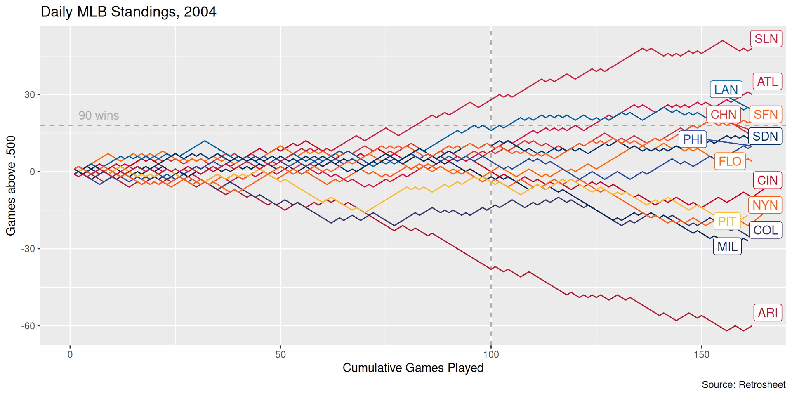
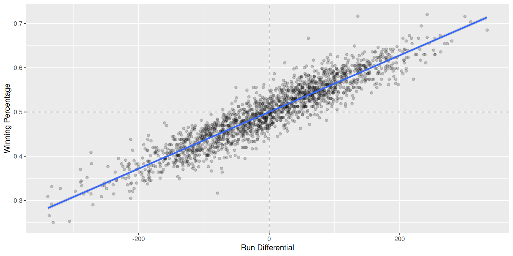
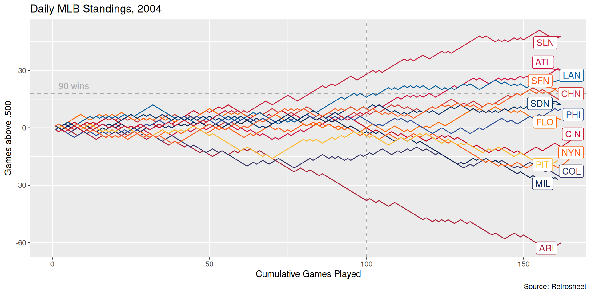

yearID teamID lgID wpct RS RA RD
1 1961 LAA AL 0.4347826 744 784 -40
2 1962 LAA AL 0.5308642 718 706 12
3 1963 LAA AL 0.4347826 597 660 -63
4 1964 LAA AL 0.5061728 544 551 -7
5 1965 CAL AL 0.4629630 527 569 -42
6 1966 CAL AL 0.4938272 604 643 -39
7 1967 CAL AL 0.5217391 567 587 -20
8 1968 CAL AL 0.4135802 498 615 -117
9 1969 CAL AL 0.4382716 528 652 -124
10 1970 CAL AL 0.5308642 631 630 1
11 1971 CAL AL 0.4691358 511 576 -65
12 1972 CAL AL 0.4838710 454 533 -79
13 1973 CAL AL 0.4876543 629 657 -28
14 1974 CAL AL 0.4197531 618 657 -39
15 1975 CAL AL 0.4472050 628 723 -95
16 1976 CAL AL 0.4691358 550 631 -81
17 1977 CAL AL 0.4567901 675 695 -20
18 1978 CAL AL 0.5370370 691 666 25
19 1979 CAL AL 0.5432099 866 768 98
20 1980 CAL AL 0.4062500 698 797 -99
21 1981 CAL AL 0.4636364 476 453 23
22 1982 CAL AL 0.5740741 814 670 144
23 1983 CAL AL 0.4320988 722 779 -57
24 1984 CAL AL 0.5000000 696 697 -1
25 1985 CAL AL 0.5555556 732 703 29
26 1986 CAL AL 0.5679012 786 684 102
27 1987 CAL AL 0.4629630 770 803 -33
28 1988 CAL AL 0.4629630 714 771 -57
29 1989 CAL AL 0.5617284 669 578 91
30 1990 CAL AL 0.4938272 690 706 -16
31 1991 CAL AL 0.5000000 653 649 4
32 1992 CAL AL 0.4444444 579 671 -92
33 1993 CAL AL 0.4382716 684 770 -86
34 1994 CAL AL 0.4086957 543 660 -117
35 1995 CAL AL 0.5379310 801 697 104
36 1996 CAL AL 0.4347826 762 943 -181
37 1997 ANA AL 0.5185185 829 794 35
38 1998 ANA AL 0.5246914 787 783 4
39 1999 ANA AL 0.4320988 711 826 -115
40 2000 ANA AL 0.5061728 864 869 -5
41 2001 ANA AL 0.4629630 691 730 -39
42 2002 ANA AL 0.6111111 851 644 207
43 2003 ANA AL 0.4753086 736 743 -7
44 2004 ANA AL 0.5679012 836 734 102
45 2005 LAA AL 0.5864198 761 643 118
46 2006 LAA AL 0.5493827 766 732 34
47 2007 LAA AL 0.5802469 822 731 91
48 2008 LAA AL 0.6172840 765 697 68
49 2009 LAA AL 0.5987654 883 761 122
50 2010 LAA AL 0.4938272 681 702 -21
51 2011 LAA AL 0.5308642 667 633 34
52 2012 LAA AL 0.5493827 767 699 68
53 2013 LAA AL 0.4814815 733 737 -4
54 2014 LAA AL 0.6049383 773 630 143
55 2015 LAA AL 0.5246914 661 675 -14
56 2016 LAA AL 0.4567901 717 727 -10
57 2017 LAA AL 0.4938272 710 709 1
58 2018 LAA AL 0.4938272 721 722 -1
59 2019 LAA AL 0.4444444 769 868 -99
60 2020 LAA AL 0.4333333 294 321 -27
61 2021 LAA AL 0.4753086 723 804 -81
62 2022 LAA AL 0.4506173 623 668 -45
63 2023 LAA AL 0.4506173 739 829 -90
64 2024 LAA AL 0.3888889 635 797 -162
65 1998 ARI NL 0.4012346 665 812 -147
66 1999 ARI NL 0.6172840 908 676 232
67 2000 ARI NL 0.5246914 792 754 38
68 2001 ARI NL 0.5679012 818 677 141
69 2002 ARI NL 0.6049383 819 674 145
70 2003 ARI NL 0.5185185 717 685 32
71 2004 ARI NL 0.3148148 615 899 -284
72 2005 ARI NL 0.4753086 696 856 -160
73 2006 ARI NL 0.4691358 773 788 -15
74 2007 ARI NL 0.5555556 712 732 -20
75 2008 ARI NL 0.5061728 720 706 14
76 2009 ARI NL 0.4320988 720 782 -62
77 2010 ARI NL 0.4012346 713 836 -123
78 2011 ARI NL 0.5802469 731 662 69
79 2012 ARI NL 0.5000000 734 688 46
80 2013 ARI NL 0.5000000 685 695 -10
81 2014 ARI NL 0.3950617 615 742 -127
82 2015 ARI NL 0.4876543 720 713 7
83 2016 ARI NL 0.4259259 752 890 -138
84 2017 ARI NL 0.5740741 812 659 153
85 2018 ARI NL 0.5061728 693 644 49
86 2019 ARI NL 0.5246914 813 743 70
87 2020 ARI NL 0.4166667 269 295 -26
88 2021 ARI NL 0.3209877 679 893 -214
89 2022 ARI NL 0.4567901 702 740 -38
90 2023 ARI NL 0.5185185 746 761 -15
91 2024 ARI NL 0.5493827 886 788 98
92 1954 ML1 NL 0.5779221 670 556 114
93 1955 ML1 NL 0.5519481 743 668 75
94 1956 ML1 NL 0.5974026 709 569 140
95 1957 ML1 NL 0.6168831 772 613 159
96 1958 ML1 NL 0.5974026 675 541 134
97 1959 ML1 NL 0.5512821 724 623 101
98 1960 ML1 NL 0.5714286 724 658 66
99 1961 ML1 NL 0.5389610 712 656 56
100 1962 ML1 NL 0.5308642 730 665 65
101 1963 ML1 NL 0.5185185 677 603 74
102 1964 ML1 NL 0.5432099 803 744 59
103 1965 ML1 NL 0.5308642 708 633 75
104 1966 ATL NL 0.5246914 782 683 99
105 1967 ATL NL 0.4753086 631 640 -9
106 1968 ATL NL 0.5000000 514 549 -35
107 1969 ATL NL 0.5740741 691 631 60
108 1970 ATL NL 0.4691358 736 772 -36
109 1971 ATL NL 0.5061728 643 699 -56
110 1972 ATL NL 0.4545455 628 730 -102
111 1973 ATL NL 0.4720497 799 774 25
112 1974 ATL NL 0.5432099 661 563 98
113 1975 ATL NL 0.4161491 583 739 -156
114 1976 ATL NL 0.4320988 620 700 -80
115 1977 ATL NL 0.3765432 678 895 -217
116 1978 ATL NL 0.4259259 600 750 -150
117 1979 ATL NL 0.4125000 669 763 -94
118 1980 ATL NL 0.5031056 630 660 -30
119 1981 ATL NL 0.4716981 395 416 -21
120 1982 ATL NL 0.5493827 739 702 37
121 1983 ATL NL 0.5432099 746 640 106
122 1984 ATL NL 0.4938272 632 655 -23
123 1985 ATL NL 0.4074074 632 781 -149
124 1986 ATL NL 0.4472050 615 719 -104
125 1987 ATL NL 0.4285714 747 829 -82
126 1988 ATL NL 0.3375000 555 741 -186
127 1989 ATL NL 0.3937500 584 680 -96
128 1990 ATL NL 0.4012346 682 821 -139
129 1991 ATL NL 0.5802469 749 644 105
130 1992 ATL NL 0.6049383 682 569 113
131 1993 ATL NL 0.6419753 767 559 208
132 1994 ATL NL 0.5964912 542 448 94
133 1995 ATL NL 0.6250000 645 540 105
134 1996 ATL NL 0.5925926 773 648 125
135 1997 ATL NL 0.6234568 791 581 210
136 1998 ATL NL 0.6543210 826 581 245
137 1999 ATL NL 0.6358025 840 661 179
138 2000 ATL NL 0.5864198 810 714 96
139 2001 ATL NL 0.5432099 729 643 86
140 2002 ATL NL 0.6312500 708 565 143
141 2003 ATL NL 0.6234568 907 740 167
142 2004 ATL NL 0.5925926 803 668 135
143 2005 ATL NL 0.5555556 769 674 95
144 2006 ATL NL 0.4876543 849 805 44
145 2007 ATL NL 0.5185185 810 733 77
146 2008 ATL NL 0.4444444 753 778 -25
147 2009 ATL NL 0.5308642 735 641 94
148 2010 ATL NL 0.5617284 738 629 109
149 2011 ATL NL 0.5493827 641 605 36
150 2012 ATL NL 0.5802469 700 600 100
151 2013 ATL NL 0.5925926 688 548 140
152 2014 ATL NL 0.4876543 573 597 -24
153 2015 ATL NL 0.4135802 573 760 -187
154 2016 ATL NL 0.4223602 649 779 -130
155 2017 ATL NL 0.4444444 732 821 -89
156 2018 ATL NL 0.5555556 759 657 102
157 2019 ATL NL 0.5987654 855 743 112
158 2020 ATL NL 0.5833333 348 288 60
159 2021 ATL NL 0.5465839 790 656 134
160 2022 ATL NL 0.6234568 789 609 180
161 2023 ATL NL 0.6419753 947 716 231
162 2024 ATL NL 0.5493827 704 607 97
163 1954 BAL AL 0.3506494 483 668 -185
164 1955 BAL AL 0.3701299 540 754 -214
165 1956 BAL AL 0.4480519 571 705 -134
166 1957 BAL AL 0.5000000 597 588 9
167 1958 BAL AL 0.4836601 521 575 -54
168 1959 BAL AL 0.4805195 551 621 -70
169 1960 BAL AL 0.5779221 682 606 76
170 1961 BAL AL 0.5864198 691 588 103
171 1962 BAL AL 0.4753086 652 680 -28
172 1963 BAL AL 0.5308642 644 621 23
173 1964 BAL AL 0.5987654 679 567 112
174 1965 BAL AL 0.5802469 641 578 63
175 1966 BAL AL 0.6062500 755 601 154
176 1967 BAL AL 0.4720497 654 592 62
177 1968 BAL AL 0.5617284 579 497 82
178 1969 BAL AL 0.6728395 779 517 262
179 1970 BAL AL 0.6666667 792 574 218
180 1971 BAL AL 0.6392405 742 530 212
181 1972 BAL AL 0.5194805 519 430 89
182 1973 BAL AL 0.5987654 754 561 193
183 1974 BAL AL 0.5617284 659 612 47
184 1975 BAL AL 0.5660377 682 553 129
185 1976 BAL AL 0.5432099 619 598 21
186 1977 BAL AL 0.6024845 719 653 66
187 1978 BAL AL 0.5590062 659 633 26
188 1979 BAL AL 0.6415094 757 582 175
189 1980 BAL AL 0.6172840 805 640 165
190 1981 BAL AL 0.5619048 429 437 -8
191 1982 BAL AL 0.5802469 774 687 87
192 1983 BAL AL 0.6049383 799 652 147
193 1984 BAL AL 0.5246914 681 667 14
194 1985 BAL AL 0.5155280 818 764 54
195 1986 BAL AL 0.4506173 708 760 -52
196 1987 BAL AL 0.4135802 729 880 -151
197 1988 BAL AL 0.3354037 550 789 -239
198 1989 BAL AL 0.5370370 708 686 22
199 1990 BAL AL 0.4720497 669 698 -29
200 1991 BAL AL 0.4135802 686 796 -110
201 1992 BAL AL 0.5493827 705 656 49
202 1993 BAL AL 0.5246914 786 745 41
203 1994 BAL AL 0.5625000 589 497 92
204 1995 BAL AL 0.4930556 704 640 64
205 1996 BAL AL 0.5432099 949 903 46
206 1997 BAL AL 0.6049383 812 681 131
207 1998 BAL AL 0.4876543 817 785 32
208 1999 BAL AL 0.4814815 851 815 36
209 2000 BAL AL 0.4567901 794 913 -119
210 2001 BAL AL 0.3913043 687 829 -142
211 2002 BAL AL 0.4135802 667 773 -106
212 2003 BAL AL 0.4382716 743 820 -77
213 2004 BAL AL 0.4814815 842 830 12
214 2005 BAL AL 0.4567901 729 800 -71
215 2006 BAL AL 0.4320988 768 899 -131
216 2007 BAL AL 0.4259259 756 868 -112
217 2008 BAL AL 0.4223602 782 869 -87
218 2009 BAL AL 0.3950617 741 876 -135
219 2010 BAL AL 0.4074074 613 785 -172
220 2011 BAL AL 0.4259259 708 860 -152
221 2012 BAL AL 0.5740741 712 705 7
222 2013 BAL AL 0.5246914 745 709 36
223 2014 BAL AL 0.5925926 705 593 112
224 2015 BAL AL 0.5000000 713 693 20
225 2016 BAL AL 0.5493827 744 715 29
226 2017 BAL AL 0.4629630 743 841 -98
227 2018 BAL AL 0.2901235 622 892 -270
228 2019 BAL AL 0.3333333 729 981 -252
229 2020 BAL AL 0.4166667 274 294 -20
230 2021 BAL AL 0.3209877 659 956 -297
231 2022 BAL AL 0.5123457 674 688 -14
232 2023 BAL AL 0.6234568 807 678 129
233 2024 BAL AL 0.5617284 786 699 87
234 1954 BOS AL 0.4480519 700 728 -28
235 1955 BOS AL 0.5454545 755 652 103
236 1956 BOS AL 0.5454545 780 751 29
237 1957 BOS AL 0.5324675 721 668 53
238 1958 BOS AL 0.5129870 697 691 6
239 1959 BOS AL 0.4870130 726 696 30
240 1960 BOS AL 0.4220779 658 775 -117
241 1961 BOS AL 0.4691358 729 792 -63
242 1962 BOS AL 0.4750000 707 756 -49
243 1963 BOS AL 0.4720497 666 704 -38
244 1964 BOS AL 0.4444444 688 793 -105
245 1965 BOS AL 0.3827160 669 791 -122
246 1966 BOS AL 0.4444444 655 731 -76
247 1967 BOS AL 0.5679012 722 614 108
248 1968 BOS AL 0.5308642 614 611 3
249 1969 BOS AL 0.5370370 743 736 7
250 1970 BOS AL 0.5370370 786 722 64
251 1971 BOS AL 0.5246914 691 667 24
252 1972 BOS AL 0.5483871 640 620 20
253 1973 BOS AL 0.5493827 738 647 91
254 1974 BOS AL 0.5185185 696 661 35
255 1975 BOS AL 0.5937500 796 709 87
256 1976 BOS AL 0.5123457 716 660 56
257 1977 BOS AL 0.6024845 859 712 147
258 1978 BOS AL 0.6073620 796 657 139
259 1979 BOS AL 0.5687500 841 711 130
260 1980 BOS AL 0.5187500 757 767 -10
261 1981 BOS AL 0.5462963 519 481 38
262 1982 BOS AL 0.5493827 753 713 40
263 1983 BOS AL 0.4814815 724 775 -51
264 1984 BOS AL 0.5308642 810 764 46
265 1985 BOS AL 0.5000000 800 720 80
266 1986 BOS AL 0.5900621 794 696 98
267 1987 BOS AL 0.4814815 842 825 17
268 1988 BOS AL 0.5493827 813 689 124
269 1989 BOS AL 0.5123457 774 735 39
270 1990 BOS AL 0.5432099 699 664 35
271 1991 BOS AL 0.5185185 731 712 19
272 1992 BOS AL 0.4506173 599 669 -70
273 1993 BOS AL 0.4938272 686 698 -12
274 1994 BOS AL 0.4695652 552 621 -69
275 1995 BOS AL 0.5972222 791 698 93
276 1996 BOS AL 0.5246914 928 921 7
277 1997 BOS AL 0.4814815 851 857 -6
278 1998 BOS AL 0.5679012 876 729 147
279 1999 BOS AL 0.5802469 836 718 118
280 2000 BOS AL 0.5246914 792 745 47
281 2001 BOS AL 0.5093168 772 745 27
282 2002 BOS AL 0.5740741 859 665 194
283 2003 BOS AL 0.5864198 961 809 152
284 2004 BOS AL 0.6049383 949 768 181
285 2005 BOS AL 0.5864198 910 805 105
286 2006 BOS AL 0.5308642 820 825 -5
287 2007 BOS AL 0.5925926 867 657 210
288 2008 BOS AL 0.5864198 845 694 151
289 2009 BOS AL 0.5864198 872 736 136
290 2010 BOS AL 0.5493827 818 744 74
291 2011 BOS AL 0.5555556 875 737 138
292 2012 BOS AL 0.4259259 734 806 -72
293 2013 BOS AL 0.5987654 853 656 197
294 2014 BOS AL 0.4382716 634 715 -81
295 2015 BOS AL 0.4814815 748 753 -5
296 2016 BOS AL 0.5740741 878 694 184
297 2017 BOS AL 0.5740741 785 668 117
298 2018 BOS AL 0.6666667 876 647 229
299 2019 BOS AL 0.5185185 901 828 73
300 2020 BOS AL 0.4000000 292 351 -59
301 2021 BOS AL 0.5679012 829 749 80
302 2022 BOS AL 0.4814815 735 787 -52
303 2023 BOS AL 0.4814815 772 776 -4
304 2024 BOS AL 0.5000000 751 747 4
305 1954 CHN NL 0.4155844 700 766 -66
306 1955 CHN NL 0.4705882 626 713 -87
307 1956 CHN NL 0.3896104 597 708 -111
308 1957 CHN NL 0.4025974 628 722 -94
309 1958 CHN NL 0.4675325 709 725 -16
310 1959 CHN NL 0.4805195 673 688 -15
311 1960 CHN NL 0.3896104 634 776 -142
312 1961 CHN NL 0.4155844 689 800 -111
313 1962 CHN NL 0.3641975 632 827 -195
314 1963 CHN NL 0.5061728 570 578 -8
315 1964 CHN NL 0.4691358 649 724 -75
316 1965 CHN NL 0.4444444 635 723 -88
317 1966 CHN NL 0.3641975 644 809 -165
318 1967 CHN NL 0.5403727 702 624 78
319 1968 CHN NL 0.5185185 612 611 1
320 1969 CHN NL 0.5679012 720 611 109
321 1970 CHN NL 0.5185185 806 679 127
322 1971 CHN NL 0.5123457 637 648 -11
323 1972 CHN NL 0.5483871 685 567 118
324 1973 CHN NL 0.4782609 614 655 -41
325 1974 CHN NL 0.4074074 669 826 -157
326 1975 CHN NL 0.4629630 712 827 -115
327 1976 CHN NL 0.4629630 611 728 -117
328 1977 CHN NL 0.5000000 692 739 -47
329 1978 CHN NL 0.4876543 664 724 -60
330 1979 CHN NL 0.4938272 706 707 -1
331 1980 CHN NL 0.3950617 614 728 -114
332 1981 CHN NL 0.3689320 370 483 -113
333 1982 CHN NL 0.4506173 676 709 -33
334 1983 CHN NL 0.4382716 701 719 -18
335 1984 CHN NL 0.5962733 762 658 104
336 1985 CHN NL 0.4782609 686 729 -43
337 1986 CHN NL 0.4375000 680 781 -101
338 1987 CHN NL 0.4720497 720 801 -81
339 1988 CHN NL 0.4753086 660 694 -34
340 1989 CHN NL 0.5740741 702 623 79
341 1990 CHN NL 0.4753086 690 774 -84
342 1991 CHN NL 0.4812500 695 734 -39
343 1992 CHN NL 0.4814815 593 624 -31
344 1993 CHN NL 0.5185185 738 739 -1
345 1994 CHN NL 0.4336283 500 549 -49
346 1995 CHN NL 0.5069444 693 671 22
347 1996 CHN NL 0.4691358 772 771 1
348 1997 CHN NL 0.4197531 687 759 -72
349 1998 CHN NL 0.5521472 831 792 39
350 1999 CHN NL 0.4135802 747 920 -173
351 2000 CHN NL 0.4012346 764 904 -140
352 2001 CHN NL 0.5432099 777 701 76
353 2002 CHN NL 0.4135802 706 759 -53
354 2003 CHN NL 0.5432099 724 683 41
355 2004 CHN NL 0.5493827 789 665 124
356 2005 CHN NL 0.4876543 703 714 -11
357 2006 CHN NL 0.4074074 716 834 -118
358 2007 CHN NL 0.5246914 752 690 62
359 2008 CHN NL 0.6024845 855 671 184
360 2009 CHN NL 0.5155280 707 672 35
361 2010 CHN NL 0.4629630 685 767 -82
362 2011 CHN NL 0.4382716 654 756 -102
363 2012 CHN NL 0.3765432 613 759 -146
364 2013 CHN NL 0.4074074 602 689 -87
365 2014 CHN NL 0.4506173 614 707 -93
366 2015 CHN NL 0.5987654 689 608 81
367 2016 CHN NL 0.6397516 808 556 252
368 2017 CHN NL 0.5679012 822 695 127
369 2018 CHN NL 0.5828221 761 645 116
370 2019 CHN NL 0.5185185 814 717 97
371 2020 CHN NL 0.5666667 265 240 25
372 2021 CHN NL 0.4382716 705 839 -134
373 2022 CHN NL 0.4567901 657 731 -74
374 2023 CHN NL 0.5123457 819 723 96
375 2024 CHN NL 0.5123457 736 669 67
376 1954 CHA AL 0.6103896 711 521 190
377 1955 CHA AL 0.5909091 725 557 168
378 1956 CHA AL 0.5519481 776 634 142
379 1957 CHA AL 0.5844156 707 566 141
380 1958 CHA AL 0.5324675 634 615 19
381 1959 CHA AL 0.6103896 669 588 81
382 1960 CHA AL 0.5649351 741 617 124
383 1961 CHA AL 0.5308642 765 726 39
384 1962 CHA AL 0.5246914 707 658 49
385 1963 CHA AL 0.5802469 683 544 139
386 1964 CHA AL 0.6049383 642 501 141
387 1965 CHA AL 0.5864198 647 555 92
388 1966 CHA AL 0.5123457 574 517 57
389 1967 CHA AL 0.5493827 531 491 40
390 1968 CHA AL 0.4135802 463 527 -64
391 1969 CHA AL 0.4197531 625 723 -98
392 1970 CHA AL 0.3456790 633 822 -189
393 1971 CHA AL 0.4876543 617 597 20
394 1972 CHA AL 0.5649351 566 538 28
395 1973 CHA AL 0.4753086 652 705 -53
396 1974 CHA AL 0.5000000 684 721 -37
397 1975 CHA AL 0.4658385 655 703 -48
398 1976 CHA AL 0.3975155 586 745 -159
399 1977 CHA AL 0.5555556 844 771 73
400 1978 CHA AL 0.4409938 634 731 -97
401 1979 CHA AL 0.4562500 730 748 -18
402 1980 CHA AL 0.4375000 587 722 -135
403 1981 CHA AL 0.5094340 476 423 53
404 1982 CHA AL 0.5370370 786 710 76
405 1983 CHA AL 0.6111111 800 650 150
406 1984 CHA AL 0.4567901 679 736 -57
407 1985 CHA AL 0.5246914 736 720 16
408 1986 CHA AL 0.4444444 644 699 -55
409 1987 CHA AL 0.4753086 748 746 2
410 1988 CHA AL 0.4409938 631 757 -126
411 1989 CHA AL 0.4285714 693 750 -57
412 1990 CHA AL 0.5802469 682 633 49
413 1991 CHA AL 0.5370370 758 681 77
414 1992 CHA AL 0.5308642 738 690 48
415 1993 CHA AL 0.5802469 776 664 112
416 1994 CHA AL 0.5929204 633 498 135
417 1995 CHA AL 0.4722222 755 758 -3
418 1996 CHA AL 0.5246914 898 794 104
419 1997 CHA AL 0.4968944 779 833 -54
420 1998 CHA AL 0.4938272 861 931 -70
421 1999 CHA AL 0.4658385 777 870 -93
422 2000 CHA AL 0.5864198 978 839 139
423 2001 CHA AL 0.5123457 798 795 3
424 2002 CHA AL 0.5000000 856 798 58
425 2003 CHA AL 0.5308642 791 715 76
426 2004 CHA AL 0.5123457 865 831 34
427 2005 CHA AL 0.6111111 741 645 96
428 2006 CHA AL 0.5555556 868 794 74
429 2007 CHA AL 0.4444444 693 839 -146
430 2008 CHA AL 0.5460123 811 729 82
431 2009 CHA AL 0.4876543 724 732 -8
432 2010 CHA AL 0.5432099 752 704 48
433 2011 CHA AL 0.4876543 654 706 -52
434 2012 CHA AL 0.5246914 748 676 72
435 2013 CHA AL 0.3888889 598 723 -125
436 2014 CHA AL 0.4506173 660 758 -98
437 2015 CHA AL 0.4691358 622 701 -79
438 2016 CHA AL 0.4814815 686 715 -29
439 2017 CHA AL 0.4135802 706 820 -114
440 2018 CHA AL 0.3827160 656 848 -192
441 2019 CHA AL 0.4472050 708 832 -124
442 2020 CHA AL 0.5833333 306 246 60
443 2021 CHA AL 0.5740741 796 636 160
444 2022 CHA AL 0.5000000 686 717 -31
445 2023 CHA AL 0.3765432 641 841 -200
446 2024 CHA AL 0.2530864 507 813 -306
447 1954 CIN NL 0.4805195 729 763 -34
448 1955 CIN NL 0.4870130 761 684 77
449 1956 CIN NL 0.5909091 775 658 117
450 1957 CIN NL 0.5194805 747 781 -34
451 1958 CIN NL 0.4935065 695 621 74
452 1959 CIN NL 0.4805195 764 738 26
453 1960 CIN NL 0.4350649 640 692 -52
454 1961 CIN NL 0.6038961 710 653 57
455 1962 CIN NL 0.6049383 802 685 117
456 1963 CIN NL 0.5308642 648 594 54
457 1964 CIN NL 0.5679012 660 566 94
458 1965 CIN NL 0.5493827 825 704 121
459 1966 CIN NL 0.4750000 692 702 -10
460 1967 CIN NL 0.5370370 604 563 41
461 1968 CIN NL 0.5123457 690 673 17
462 1969 CIN NL 0.5493827 798 768 30
463 1970 CIN NL 0.6296296 775 681 94
464 1971 CIN NL 0.4876543 586 581 5
465 1972 CIN NL 0.6168831 707 557 150
466 1973 CIN NL 0.6111111 741 621 120
467 1974 CIN NL 0.6049383 776 631 145
468 1975 CIN NL 0.6666667 840 586 254
469 1976 CIN NL 0.6296296 857 633 224
470 1977 CIN NL 0.5432099 802 725 77
471 1978 CIN NL 0.5714286 710 688 22
472 1979 CIN NL 0.5590062 731 644 87
473 1980 CIN NL 0.5493827 707 670 37
474 1981 CIN NL 0.6111111 464 440 24
475 1982 CIN NL 0.3765432 545 661 -116
476 1983 CIN NL 0.4567901 623 710 -87
477 1984 CIN NL 0.4320988 627 747 -120
478 1985 CIN NL 0.5527950 677 666 11
479 1986 CIN NL 0.5308642 732 717 15
480 1987 CIN NL 0.5185185 783 752 31
481 1988 CIN NL 0.5403727 641 596 45
482 1989 CIN NL 0.4629630 632 691 -59
483 1990 CIN NL 0.5617284 693 597 96
484 1991 CIN NL 0.4567901 689 691 -2
485 1992 CIN NL 0.5555556 660 609 51
486 1993 CIN NL 0.4506173 722 785 -63
487 1994 CIN NL 0.5789474 609 490 119
488 1995 CIN NL 0.5902778 747 623 124
489 1996 CIN NL 0.5000000 778 773 5
490 1997 CIN NL 0.4691358 651 764 -113
491 1998 CIN NL 0.4753086 750 760 -10
492 1999 CIN NL 0.5889571 865 711 154
493 2000 CIN NL 0.5246914 825 765 60
494 2001 CIN NL 0.4074074 735 850 -115
495 2002 CIN NL 0.4814815 709 774 -65
496 2003 CIN NL 0.4259259 694 886 -192
497 2004 CIN NL 0.4691358 750 907 -157
498 2005 CIN NL 0.4506173 820 889 -69
499 2006 CIN NL 0.4938272 749 801 -52
500 2007 CIN NL 0.4444444 783 853 -70
501 2008 CIN NL 0.4567901 704 800 -96
502 2009 CIN NL 0.4814815 673 723 -50
503 2010 CIN NL 0.5617284 790 685 105
504 2011 CIN NL 0.4876543 735 720 15
505 2012 CIN NL 0.5987654 669 588 81
506 2013 CIN NL 0.5555556 698 589 109
507 2014 CIN NL 0.4691358 595 612 -17
508 2015 CIN NL 0.3950617 640 754 -114
509 2016 CIN NL 0.4197531 716 854 -138
510 2017 CIN NL 0.4197531 753 869 -116
511 2018 CIN NL 0.4135802 696 819 -123
512 2019 CIN NL 0.4629630 701 711 -10
513 2020 CIN NL 0.5166667 243 243 0
514 2021 CIN NL 0.5123457 786 760 26
515 2022 CIN NL 0.3827160 648 815 -167
516 2023 CIN NL 0.5061728 783 821 -38
517 2024 CIN NL 0.4753086 699 694 5
518 1954 CLE AL 0.7207792 746 504 242
519 1955 CLE AL 0.6038961 698 601 97
520 1956 CLE AL 0.5714286 712 581 131
521 1957 CLE AL 0.4967320 682 722 -40
522 1958 CLE AL 0.5032680 694 635 59
523 1959 CLE AL 0.5779221 745 646 99
524 1960 CLE AL 0.4935065 667 693 -26
525 1961 CLE AL 0.4844720 737 752 -15
526 1962 CLE AL 0.4938272 682 745 -63
527 1963 CLE AL 0.4876543 635 702 -67
528 1964 CLE AL 0.4876543 689 693 -4
529 1965 CLE AL 0.5370370 663 613 50
530 1966 CLE AL 0.5000000 574 586 -12
531 1967 CLE AL 0.4629630 559 613 -54
532 1968 CLE AL 0.5341615 516 504 12
533 1969 CLE AL 0.3850932 573 717 -144
534 1970 CLE AL 0.4691358 649 675 -26
535 1971 CLE AL 0.3703704 543 747 -204
536 1972 CLE AL 0.4615385 472 519 -47
537 1973 CLE AL 0.4382716 680 826 -146
538 1974 CLE AL 0.4753086 662 694 -32
539 1975 CLE AL 0.4968553 688 703 -15
540 1976 CLE AL 0.5094340 615 615 0
541 1977 CLE AL 0.4409938 676 739 -63
542 1978 CLE AL 0.4339623 639 694 -55
543 1979 CLE AL 0.5031056 760 805 -45
544 1980 CLE AL 0.4937500 738 807 -69
545 1981 CLE AL 0.5048544 431 442 -11
546 1982 CLE AL 0.4814815 683 748 -65
547 1983 CLE AL 0.4320988 704 785 -81
548 1984 CLE AL 0.4629630 761 766 -5
549 1985 CLE AL 0.3703704 729 861 -132
550 1986 CLE AL 0.5185185 831 841 -10
551 1987 CLE AL 0.3765432 742 957 -215
552 1988 CLE AL 0.4814815 666 731 -65
553 1989 CLE AL 0.4506173 604 654 -50
554 1990 CLE AL 0.4753086 732 737 -5
555 1991 CLE AL 0.3518519 576 759 -183
556 1992 CLE AL 0.4691358 674 746 -72
557 1993 CLE AL 0.4691358 790 813 -23
558 1994 CLE AL 0.5840708 679 562 117
559 1995 CLE AL 0.6944444 840 607 233
560 1996 CLE AL 0.6149068 952 769 183
561 1997 CLE AL 0.5341615 868 815 53
562 1998 CLE AL 0.5493827 850 779 71
563 1999 CLE AL 0.5987654 1009 860 149
564 2000 CLE AL 0.5555556 950 816 134
565 2001 CLE AL 0.5617284 897 821 76
566 2002 CLE AL 0.4567901 739 837 -98
567 2003 CLE AL 0.4197531 699 778 -79
568 2004 CLE AL 0.4938272 858 857 1
569 2005 CLE AL 0.5740741 790 642 148
570 2006 CLE AL 0.4814815 870 782 88
571 2007 CLE AL 0.5925926 811 704 107
572 2008 CLE AL 0.5000000 805 761 44
573 2009 CLE AL 0.4012346 773 865 -92
574 2010 CLE AL 0.4259259 646 752 -106
575 2011 CLE AL 0.4938272 704 760 -56
576 2012 CLE AL 0.4197531 667 845 -178
577 2013 CLE AL 0.5679012 745 662 83
578 2014 CLE AL 0.5246914 669 653 16
579 2015 CLE AL 0.5031056 669 640 29
580 2016 CLE AL 0.5838509 777 676 101
581 2017 CLE AL 0.6296296 818 564 254
582 2018 CLE AL 0.5617284 818 648 170
583 2019 CLE AL 0.5740741 769 657 112
584 2020 CLE AL 0.5833333 248 209 39
585 2021 CLE AL 0.4938272 717 727 -10
586 2022 CLE AL 0.5679012 698 634 64
587 2023 CLE AL 0.4691358 662 697 -35
588 2024 CLE AL 0.5714286 708 621 87
589 1993 COL NL 0.4135802 758 967 -209
590 1994 COL NL 0.4529915 573 638 -65
591 1995 COL NL 0.5347222 785 783 2
592 1996 COL NL 0.5123457 961 964 -3
593 1997 COL NL 0.5123457 923 908 15
594 1998 COL NL 0.4753086 826 855 -29
595 1999 COL NL 0.4444444 906 1028 -122
596 2000 COL NL 0.5061728 968 897 71
597 2001 COL NL 0.4506173 923 906 17
598 2002 COL NL 0.4506173 778 898 -120
599 2003 COL NL 0.4567901 853 892 -39
600 2004 COL NL 0.4197531 833 923 -90
601 2005 COL NL 0.4135802 740 862 -122
602 2006 COL NL 0.4691358 813 812 1
603 2007 COL NL 0.5521472 860 758 102
604 2008 COL NL 0.4567901 747 822 -75
605 2009 COL NL 0.5679012 804 715 89
606 2010 COL NL 0.5123457 770 717 53
607 2011 COL NL 0.4506173 735 774 -39
608 2012 COL NL 0.3950617 758 890 -132
609 2013 COL NL 0.4567901 706 760 -54
610 2014 COL NL 0.4074074 755 818 -63
611 2015 COL NL 0.4197531 737 844 -107
612 2016 COL NL 0.4629630 845 860 -15
613 2017 COL NL 0.5370370 824 757 67
614 2018 COL NL 0.5582822 780 745 35
615 2019 COL NL 0.4382716 835 958 -123
616 2020 COL NL 0.4333333 275 353 -78
617 2021 COL NL 0.4596273 739 796 -57
618 2022 COL NL 0.4197531 698 873 -175
619 2023 COL NL 0.3641975 721 957 -236
620 2024 COL NL 0.3765432 682 929 -247
621 1954 DET AL 0.4415584 584 664 -80
622 1955 DET AL 0.5129870 775 658 117
623 1956 DET AL 0.5324675 789 699 90
624 1957 DET AL 0.5064935 614 614 0
625 1958 DET AL 0.5000000 659 606 53
626 1959 DET AL 0.4935065 713 732 -19
627 1960 DET AL 0.4610390 633 644 -11
628 1961 DET AL 0.6234568 841 671 170
629 1962 DET AL 0.5279503 758 692 66
630 1963 DET AL 0.4876543 700 703 -3
631 1964 DET AL 0.5246914 699 678 21
632 1965 DET AL 0.5493827 680 602 78
633 1966 DET AL 0.5432099 719 698 21
634 1967 DET AL 0.5617284 683 587 96
635 1968 DET AL 0.6358025 671 492 179
636 1969 DET AL 0.5555556 701 601 100
637 1970 DET AL 0.4876543 666 731 -65
638 1971 DET AL 0.5617284 701 645 56
639 1972 DET AL 0.5512821 558 514 44
640 1973 DET AL 0.5246914 642 674 -32
641 1974 DET AL 0.4444444 620 768 -148
642 1975 DET AL 0.3584906 570 786 -216
643 1976 DET AL 0.4596273 609 709 -100
644 1977 DET AL 0.4567901 714 751 -37
645 1978 DET AL 0.5308642 714 653 61
646 1979 DET AL 0.5279503 770 738 32
647 1980 DET AL 0.5185185 830 757 73
648 1981 DET AL 0.5504587 427 404 23
649 1982 DET AL 0.5123457 729 685 44
650 1983 DET AL 0.5679012 789 679 110
651 1984 DET AL 0.6419753 829 643 186
652 1985 DET AL 0.5217391 729 688 41
653 1986 DET AL 0.5370370 798 714 84
654 1987 DET AL 0.6049383 896 735 161
655 1988 DET AL 0.5432099 703 658 45
656 1989 DET AL 0.3641975 617 816 -199
657 1990 DET AL 0.4876543 750 754 -4
658 1991 DET AL 0.5185185 817 794 23
659 1992 DET AL 0.4629630 791 794 -3
660 1993 DET AL 0.5246914 899 837 62
661 1994 DET AL 0.4608696 652 671 -19
662 1995 DET AL 0.4166667 654 844 -190
663 1996 DET AL 0.3271605 783 1103 -320
664 1997 DET AL 0.4876543 784 790 -6
665 1998 DET AL 0.4012346 722 863 -141
666 1999 DET AL 0.4285714 747 882 -135
667 2000 DET AL 0.4876543 823 827 -4
668 2001 DET AL 0.4074074 724 876 -152
669 2002 DET AL 0.3416149 575 864 -289
670 2003 DET AL 0.2654321 591 928 -337
671 2004 DET AL 0.4444444 827 844 -17
672 2005 DET AL 0.4382716 723 787 -64
673 2006 DET AL 0.5864198 822 675 147
674 2007 DET AL 0.5432099 887 797 90
675 2008 DET AL 0.4567901 821 857 -36
676 2009 DET AL 0.5276074 743 745 -2
677 2010 DET AL 0.5000000 751 743 8
678 2011 DET AL 0.5864198 787 711 76
679 2012 DET AL 0.5432099 726 670 56
680 2013 DET AL 0.5740741 796 624 172
681 2014 DET AL 0.5555556 757 705 52
682 2015 DET AL 0.4596273 689 803 -114
683 2016 DET AL 0.5341615 750 721 29
684 2017 DET AL 0.3950617 735 894 -159
685 2018 DET AL 0.3950617 630 796 -166
686 2019 DET AL 0.2919255 582 915 -333
687 2020 DET AL 0.3965517 249 318 -69
688 2021 DET AL 0.4753086 697 756 -59
689 2022 DET AL 0.4074074 557 713 -156
690 2023 DET AL 0.4814815 661 740 -79
691 2024 DET AL 0.5308642 682 642 40
692 1993 FLO NL 0.3950617 581 724 -143
693 1994 FLO NL 0.4434783 468 576 -108
694 1995 FLO NL 0.4685315 673 673 0
695 1996 FLO NL 0.4938272 688 703 -15
696 1997 FLO NL 0.5679012 740 669 71
697 1998 FLO NL 0.3333333 667 923 -256
698 1999 FLO NL 0.3950617 691 852 -161
699 2000 FLO NL 0.4906832 731 797 -66
700 2001 FLO NL 0.4691358 742 744 -2
701 2002 FLO NL 0.4876543 699 763 -64
702 2003 FLO NL 0.5617284 751 692 59
703 2004 FLO NL 0.5123457 718 700 18
704 2005 FLO NL 0.5123457 717 732 -15
705 2006 FLO NL 0.4814815 758 772 -14
706 2007 FLO NL 0.4382716 790 891 -101
707 2008 FLO NL 0.5217391 770 767 3
708 2009 FLO NL 0.5370370 772 766 6
709 2010 FLO NL 0.4938272 719 717 2
710 2011 FLO NL 0.4444444 625 702 -77
711 2012 MIA NL 0.4259259 609 724 -115
712 2013 MIA NL 0.3827160 513 646 -133
713 2014 MIA NL 0.4753086 645 674 -29
714 2015 MIA NL 0.4382716 613 678 -65
715 2016 MIA NL 0.4906832 655 682 -27
716 2017 MIA NL 0.4753086 778 822 -44
717 2018 MIA NL 0.3913043 589 809 -220
718 2019 MIA NL 0.3518519 615 808 -193
719 2020 MIA NL 0.5166667 263 304 -41
720 2021 MIA NL 0.4135802 623 701 -78
721 2022 MIA NL 0.4259259 586 676 -90
722 2023 MIA NL 0.5185185 666 723 -57
723 2024 MIA NL 0.3827160 637 841 -204
724 1962 HOU NL 0.4000000 592 717 -125
725 1963 HOU NL 0.4074074 464 640 -176
726 1964 HOU NL 0.4074074 495 628 -133
727 1965 HOU NL 0.4012346 569 711 -142
728 1966 HOU NL 0.4444444 612 695 -83
729 1967 HOU NL 0.4259259 626 742 -116
730 1968 HOU NL 0.4444444 510 588 -78
731 1969 HOU NL 0.5000000 676 668 8
732 1970 HOU NL 0.4876543 744 763 -19
733 1971 HOU NL 0.4876543 585 567 18
734 1972 HOU NL 0.5490196 708 636 72
735 1973 HOU NL 0.5061728 681 672 9
736 1974 HOU NL 0.5000000 653 632 21
737 1975 HOU NL 0.3975155 664 711 -47
738 1976 HOU NL 0.4938272 625 657 -32
739 1977 HOU NL 0.5000000 680 650 30
740 1978 HOU NL 0.4567901 605 634 -29
741 1979 HOU NL 0.5493827 583 582 1
742 1980 HOU NL 0.5705521 637 589 48
743 1981 HOU NL 0.5545455 394 331 63
744 1982 HOU NL 0.4753086 569 620 -51
745 1983 HOU NL 0.5246914 643 646 -3
746 1984 HOU NL 0.4938272 693 630 63
747 1985 HOU NL 0.5123457 706 691 15
748 1986 HOU NL 0.5925926 654 569 85
749 1987 HOU NL 0.4691358 648 678 -30
750 1988 HOU NL 0.5061728 617 631 -14
751 1989 HOU NL 0.5308642 647 669 -22
752 1990 HOU NL 0.4629630 573 656 -83
753 1991 HOU NL 0.4012346 605 717 -112
754 1992 HOU NL 0.5000000 608 668 -60
755 1993 HOU NL 0.5246914 716 630 86
756 1994 HOU NL 0.5739130 602 503 99
757 1995 HOU NL 0.5277778 747 674 73
758 1996 HOU NL 0.5061728 753 792 -39
759 1997 HOU NL 0.5185185 777 660 117
760 1998 HOU NL 0.6296296 874 620 254
761 1999 HOU NL 0.5987654 823 675 148
762 2000 HOU NL 0.4444444 938 944 -6
763 2001 HOU NL 0.5740741 847 769 78
764 2002 HOU NL 0.5185185 749 695 54
765 2003 HOU NL 0.5370370 805 677 128
766 2004 HOU NL 0.5679012 803 698 105
767 2005 HOU NL 0.5493827 693 609 84
768 2006 HOU NL 0.5061728 735 719 16
769 2007 HOU NL 0.4506173 723 813 -90
770 2008 HOU NL 0.5341615 712 743 -31
771 2009 HOU NL 0.4567901 643 770 -127
772 2010 HOU NL 0.4691358 611 729 -118
773 2011 HOU NL 0.3456790 615 796 -181
774 2012 HOU NL 0.3395062 583 794 -211
775 2013 HOU AL 0.3148148 610 848 -238
776 2014 HOU AL 0.4320988 629 723 -94
777 2015 HOU AL 0.5308642 729 618 111
778 2016 HOU AL 0.5185185 724 701 23
779 2017 HOU AL 0.6234568 896 700 196
780 2018 HOU AL 0.6358025 797 534 263
781 2019 HOU AL 0.6604938 920 640 280
782 2020 HOU AL 0.4833333 279 275 4
783 2021 HOU AL 0.5864198 863 658 205
784 2022 HOU AL 0.6543210 737 518 219
785 2023 HOU AL 0.5555556 827 698 129
786 2024 HOU AL 0.5465839 740 649 91
787 1969 KCA AL 0.4259259 586 688 -102
788 1970 KCA AL 0.4012346 611 705 -94
789 1971 KCA AL 0.5279503 603 566 37
790 1972 KCA AL 0.4935065 580 545 35
791 1973 KCA AL 0.5432099 755 752 3
792 1974 KCA AL 0.4753086 667 662 5
793 1975 KCA AL 0.5617284 710 649 61
794 1976 KCA AL 0.5555556 713 611 102
795 1977 KCA AL 0.6296296 822 651 171
796 1978 KCA AL 0.5679012 743 634 109
797 1979 KCA AL 0.5246914 851 816 35
798 1980 KCA AL 0.5987654 809 694 115
799 1981 KCA AL 0.4854369 397 405 -8
800 1982 KCA AL 0.5555556 784 717 67
801 1983 KCA AL 0.4876543 696 767 -71
802 1984 KCA AL 0.5185185 673 686 -13
803 1985 KCA AL 0.5617284 687 639 48
804 1986 KCA AL 0.4691358 654 673 -19
805 1987 KCA AL 0.5123457 715 691 24
806 1988 KCA AL 0.5217391 704 648 56
807 1989 KCA AL 0.5679012 690 635 55
808 1990 KCA AL 0.4658385 707 709 -2
809 1991 KCA AL 0.5061728 727 722 5
810 1992 KCA AL 0.4444444 610 667 -57
811 1993 KCA AL 0.5185185 675 694 -19
812 1994 KCA AL 0.5565217 574 532 42
813 1995 KCA AL 0.4861111 629 691 -62
814 1996 KCA AL 0.4658385 746 786 -40
815 1997 KCA AL 0.4161491 747 820 -73
816 1998 KCA AL 0.4472050 714 899 -185
817 1999 KCA AL 0.3975155 856 921 -65
818 2000 KCA AL 0.4753086 879 930 -51
819 2001 KCA AL 0.4012346 729 858 -129
820 2002 KCA AL 0.3827160 737 891 -154
821 2003 KCA AL 0.5123457 836 867 -31
822 2004 KCA AL 0.3580247 720 905 -185
823 2005 KCA AL 0.3456790 701 935 -234
824 2006 KCA AL 0.3827160 757 971 -214
825 2007 KCA AL 0.4259259 706 778 -72
826 2008 KCA AL 0.4629630 691 781 -90
827 2009 KCA AL 0.4012346 686 842 -156
828 2010 KCA AL 0.4135802 676 845 -169
829 2011 KCA AL 0.4382716 730 762 -32
830 2012 KCA AL 0.4444444 676 746 -70
831 2013 KCA AL 0.5308642 648 601 47
832 2014 KCA AL 0.5493827 651 624 27
833 2015 KCA AL 0.5864198 724 641 83
834 2016 KCA AL 0.5000000 675 712 -37
835 2017 KCA AL 0.4938272 702 791 -89
836 2018 KCA AL 0.3580247 638 833 -195
837 2019 KCA AL 0.3641975 691 869 -178
838 2020 KCA AL 0.4333333 248 272 -24
839 2021 KCA AL 0.4567901 686 788 -102
840 2022 KCA AL 0.4012346 640 810 -170
841 2023 KCA AL 0.3456790 676 859 -183
842 2024 KCA AL 0.5308642 735 644 91
843 1954 BRO NL 0.5974026 778 740 38
844 1955 BRO NL 0.6405229 857 650 207
845 1956 BRO NL 0.6038961 720 601 119
846 1957 BRO NL 0.5454545 690 591 99
847 1958 LAN NL 0.4610390 668 761 -93
848 1959 LAN NL 0.5641026 705 670 35
849 1960 LAN NL 0.5324675 662 593 69
850 1961 LAN NL 0.5779221 735 697 38
851 1962 LAN NL 0.6181818 842 697 145
852 1963 LAN NL 0.6111111 640 550 90
853 1964 LAN NL 0.4938272 614 572 42
854 1965 LAN NL 0.5987654 608 521 87
855 1966 LAN NL 0.5864198 606 490 116
856 1967 LAN NL 0.4506173 519 595 -76
857 1968 LAN NL 0.4691358 470 509 -39
858 1969 LAN NL 0.5246914 645 561 84
859 1970 LAN NL 0.5403727 749 684 65
860 1971 LAN NL 0.5493827 663 587 76
861 1972 LAN NL 0.5483871 584 527 57
862 1973 LAN NL 0.5900621 675 565 110
863 1974 LAN NL 0.6296296 798 561 237
864 1975 LAN NL 0.5432099 648 534 114
865 1976 LAN NL 0.5679012 608 543 65
866 1977 LAN NL 0.6049383 769 582 187
867 1978 LAN NL 0.5864198 727 573 154
868 1979 LAN NL 0.4876543 739 717 22
869 1980 LAN NL 0.5644172 663 591 72
870 1981 LAN NL 0.5727273 450 356 94
871 1982 LAN NL 0.5432099 691 612 79
872 1983 LAN NL 0.5617284 654 609 45
873 1984 LAN NL 0.4876543 580 600 -20
874 1985 LAN NL 0.5864198 682 579 103
875 1986 LAN NL 0.4506173 638 679 -41
876 1987 LAN NL 0.4506173 635 675 -40
877 1988 LAN NL 0.5838509 628 544 84
878 1989 LAN NL 0.4812500 554 536 18
879 1990 LAN NL 0.5308642 728 685 43
880 1991 LAN NL 0.5740741 665 565 100
881 1992 LAN NL 0.3888889 548 636 -88
882 1993 LAN NL 0.5000000 675 662 13
883 1994 LAN NL 0.5087719 532 509 23
884 1995 LAN NL 0.5416667 634 609 25
885 1996 LAN NL 0.5555556 703 652 51
886 1997 LAN NL 0.5432099 742 645 97
887 1998 LAN NL 0.5123457 669 678 -9
888 1999 LAN NL 0.4753086 793 787 6
889 2000 LAN NL 0.5308642 798 729 69
890 2001 LAN NL 0.5308642 758 744 14
891 2002 LAN NL 0.5679012 713 643 70
892 2003 LAN NL 0.5246914 574 556 18
893 2004 LAN NL 0.5740741 761 684 77
894 2005 LAN NL 0.4382716 685 755 -70
895 2006 LAN NL 0.5432099 820 751 69
896 2007 LAN NL 0.5061728 735 727 8
897 2008 LAN NL 0.5185185 700 648 52
898 2009 LAN NL 0.5864198 780 611 169
899 2010 LAN NL 0.4938272 667 692 -25
900 2011 LAN NL 0.5093168 644 612 32
901 2012 LAN NL 0.5308642 637 597 40
902 2013 LAN NL 0.5679012 649 582 67
903 2014 LAN NL 0.5802469 718 617 101
904 2015 LAN NL 0.5679012 667 595 72
905 2016 LAN NL 0.5617284 725 638 87
906 2017 LAN NL 0.6419753 770 580 190
907 2018 LAN NL 0.5644172 804 610 194
908 2019 LAN NL 0.6543210 886 613 273
909 2020 LAN NL 0.7166667 349 213 136
910 2021 LAN NL 0.6543210 830 561 269
911 2022 LAN NL 0.6851852 847 513 334
912 2023 LAN NL 0.6172840 906 699 207
913 2024 LAN NL 0.6049383 842 686 156
914 1969 SE1 AL 0.3950617 639 799 -160
915 1970 ML4 AL 0.4012346 613 751 -138
916 1971 ML4 AL 0.4285714 534 609 -75
917 1972 ML4 AL 0.4166667 493 595 -102
918 1973 ML4 AL 0.4567901 708 731 -23
919 1974 ML4 AL 0.4691358 647 660 -13
920 1975 ML4 AL 0.4197531 675 792 -117
921 1976 ML4 AL 0.4099379 570 655 -85
922 1977 ML4 AL 0.4135802 639 765 -126
923 1978 ML4 AL 0.5740741 804 650 154
924 1979 ML4 AL 0.5900621 807 722 85
925 1980 ML4 AL 0.5308642 811 682 129
926 1981 ML4 AL 0.5688073 493 459 34
927 1982 ML4 AL 0.5864198 891 717 174
928 1983 ML4 AL 0.5370370 764 708 56
929 1984 ML4 AL 0.4161491 641 734 -93
930 1985 ML4 AL 0.4409938 690 802 -112
931 1986 ML4 AL 0.4782609 667 734 -67
932 1987 ML4 AL 0.5617284 862 817 45
933 1988 ML4 AL 0.5370370 682 616 66
934 1989 ML4 AL 0.5000000 707 679 28
935 1990 ML4 AL 0.4567901 732 760 -28
936 1991 ML4 AL 0.5123457 799 744 55
937 1992 ML4 AL 0.5679012 740 604 136
938 1993 ML4 AL 0.4259259 733 792 -59
939 1994 ML4 AL 0.4608696 547 586 -39
940 1995 ML4 AL 0.4513889 740 747 -7
941 1996 ML4 AL 0.4938272 894 899 -5
942 1997 ML4 AL 0.4844720 681 742 -61
943 1998 MIL NL 0.4567901 707 812 -105
944 1999 MIL NL 0.4596273 815 886 -71
945 2000 MIL NL 0.4506173 740 826 -86
946 2001 MIL NL 0.4197531 740 806 -66
947 2002 MIL NL 0.3456790 627 821 -194
948 2003 MIL NL 0.4197531 714 873 -159
949 2004 MIL NL 0.4161491 634 757 -123
950 2005 MIL NL 0.5000000 726 697 29
951 2006 MIL NL 0.4629630 730 833 -103
952 2007 MIL NL 0.5123457 801 776 25
953 2008 MIL NL 0.5555556 750 689 61
954 2009 MIL NL 0.4938272 785 818 -33
955 2010 MIL NL 0.4753086 750 804 -54
956 2011 MIL NL 0.5925926 721 638 83
957 2012 MIL NL 0.5123457 776 733 43
958 2013 MIL NL 0.4567901 640 687 -47
959 2014 MIL NL 0.5061728 650 657 -7
960 2015 MIL NL 0.4197531 655 737 -82
961 2016 MIL NL 0.4506173 671 733 -62
962 2017 MIL NL 0.5308642 732 697 35
963 2018 MIL NL 0.5889571 754 659 95
964 2019 MIL NL 0.5493827 769 766 3
965 2020 MIL NL 0.4833333 247 264 -17
966 2021 MIL NL 0.5864198 738 623 115
967 2022 MIL NL 0.5308642 725 688 37
968 2023 MIL NL 0.5679012 728 647 81
969 2024 MIL NL 0.5740741 777 641 136
970 1954 WS1 AL 0.4285714 632 680 -48
971 1955 WS1 AL 0.3441558 598 789 -191
972 1956 WS1 AL 0.3831169 652 924 -272
973 1957 WS1 AL 0.3571429 603 808 -205
974 1958 WS1 AL 0.3961039 553 747 -194
975 1959 WS1 AL 0.4090909 619 701 -82
976 1960 WS1 AL 0.4740260 672 696 -24
977 1961 MIN AL 0.4375000 707 778 -71
978 1962 MIN AL 0.5617284 798 713 85
979 1963 MIN AL 0.5652174 767 602 165
980 1964 MIN AL 0.4876543 737 678 59
981 1965 MIN AL 0.6296296 774 600 174
982 1966 MIN AL 0.5493827 663 581 82
983 1967 MIN AL 0.5617284 671 590 81
984 1968 MIN AL 0.4876543 562 546 16
985 1969 MIN AL 0.5987654 790 618 172
986 1970 MIN AL 0.6049383 744 605 139
987 1971 MIN AL 0.4625000 654 670 -16
988 1972 MIN AL 0.5000000 537 535 2
989 1973 MIN AL 0.5000000 738 692 46
990 1974 MIN AL 0.5061728 673 669 4
991 1975 MIN AL 0.4779874 724 736 -12
992 1976 MIN AL 0.5246914 743 704 39
993 1977 MIN AL 0.5217391 867 776 91
994 1978 MIN AL 0.4506173 666 678 -12
995 1979 MIN AL 0.5061728 764 725 39
996 1980 MIN AL 0.4782609 670 724 -54
997 1981 MIN AL 0.3761468 378 486 -108
998 1982 MIN AL 0.3703704 657 819 -162
999 1983 MIN AL 0.4320988 709 822 -113
1000 1984 MIN AL 0.5000000 673 675 -2
1001 1985 MIN AL 0.4753086 705 782 -77
1002 1986 MIN AL 0.4382716 741 839 -98
1003 1987 MIN AL 0.5246914 786 806 -20
1004 1988 MIN AL 0.5617284 759 672 87
1005 1989 MIN AL 0.4938272 740 738 2
1006 1990 MIN AL 0.4567901 666 729 -63
1007 1991 MIN AL 0.5864198 776 652 124
1008 1992 MIN AL 0.5555556 747 653 94
1009 1993 MIN AL 0.4382716 693 830 -137
1010 1994 MIN AL 0.4690265 594 688 -94
1011 1995 MIN AL 0.3888889 703 889 -186
1012 1996 MIN AL 0.4814815 877 900 -23
1013 1997 MIN AL 0.4197531 772 861 -89
1014 1998 MIN AL 0.4320988 734 818 -84
1015 1999 MIN AL 0.3937500 686 845 -159
1016 2000 MIN AL 0.4259259 748 880 -132
1017 2001 MIN AL 0.5246914 771 766 5
1018 2002 MIN AL 0.5838509 768 712 56
1019 2003 MIN AL 0.5555556 801 758 43
1020 2004 MIN AL 0.5679012 780 715 65
1021 2005 MIN AL 0.5123457 688 662 26
1022 2006 MIN AL 0.5925926 801 683 118
1023 2007 MIN AL 0.4876543 718 725 -7
1024 2008 MIN AL 0.5398773 829 745 84
1025 2009 MIN AL 0.5337423 817 765 52
1026 2010 MIN AL 0.5802469 781 671 110
1027 2011 MIN AL 0.3888889 619 804 -185
1028 2012 MIN AL 0.4074074 701 832 -131
1029 2013 MIN AL 0.4074074 614 788 -174
1030 2014 MIN AL 0.4320988 715 777 -62
1031 2015 MIN AL 0.5123457 696 700 -4
1032 2016 MIN AL 0.3641975 722 889 -167
1033 2017 MIN AL 0.5246914 815 788 27
1034 2018 MIN AL 0.4814815 738 775 -37
1035 2019 MIN AL 0.6234568 939 754 185
1036 2020 MIN AL 0.6000000 269 215 54
1037 2021 MIN AL 0.4506173 729 834 -105
1038 2022 MIN AL 0.4814815 696 684 12
1039 2023 MIN AL 0.5370370 778 659 119
1040 2024 MIN AL 0.5061728 742 735 7
1041 1962 NYN NL 0.2500000 617 948 -331
1042 1963 NYN NL 0.3148148 501 774 -273
1043 1964 NYN NL 0.3271605 569 776 -207
1044 1965 NYN NL 0.3086420 495 752 -257
1045 1966 NYN NL 0.4099379 587 761 -174
1046 1967 NYN NL 0.3765432 498 672 -174
1047 1968 NYN NL 0.4506173 473 499 -26
1048 1969 NYN NL 0.6172840 632 541 91
1049 1970 NYN NL 0.5123457 695 630 65
1050 1971 NYN NL 0.5123457 588 550 38
1051 1972 NYN NL 0.5320513 528 578 -50
1052 1973 NYN NL 0.5093168 608 588 20
1053 1974 NYN NL 0.4382716 572 646 -74
1054 1975 NYN NL 0.5061728 646 625 21
1055 1976 NYN NL 0.5308642 615 538 77
1056 1977 NYN NL 0.3950617 587 663 -76
1057 1978 NYN NL 0.4074074 607 690 -83
1058 1979 NYN NL 0.3888889 593 706 -113
1059 1980 NYN NL 0.4135802 611 702 -91
1060 1981 NYN NL 0.3980583 348 432 -84
1061 1982 NYN NL 0.4012346 609 723 -114
1062 1983 NYN NL 0.4197531 575 680 -105
1063 1984 NYN NL 0.5555556 652 676 -24
1064 1985 NYN NL 0.6049383 695 568 127
1065 1986 NYN NL 0.6666667 783 578 205
1066 1987 NYN NL 0.5679012 823 698 125
1067 1988 NYN NL 0.6250000 703 532 171
1068 1989 NYN NL 0.5370370 683 595 88
1069 1990 NYN NL 0.5617284 775 613 162
1070 1991 NYN NL 0.4782609 640 646 -6
1071 1992 NYN NL 0.4444444 599 653 -54
1072 1993 NYN NL 0.3641975 672 744 -72
1073 1994 NYN NL 0.4867257 506 526 -20
1074 1995 NYN NL 0.4791667 657 618 39
1075 1996 NYN NL 0.4382716 746 779 -33
1076 1997 NYN NL 0.5432099 777 709 68
1077 1998 NYN NL 0.5432099 706 645 61
1078 1999 NYN NL 0.5950920 853 711 142
1079 2000 NYN NL 0.5802469 807 738 69
1080 2001 NYN NL 0.5061728 642 713 -71
1081 2002 NYN NL 0.4658385 690 703 -13
1082 2003 NYN NL 0.4099379 642 754 -112
1083 2004 NYN NL 0.4382716 684 731 -47
1084 2005 NYN NL 0.5123457 722 648 74
1085 2006 NYN NL 0.5987654 834 731 103
1086 2007 NYN NL 0.5432099 804 750 54
1087 2008 NYN NL 0.5493827 799 715 84
1088 2009 NYN NL 0.4320988 671 757 -86
1089 2010 NYN NL 0.4876543 656 652 4
1090 2011 NYN NL 0.4753086 718 742 -24
1091 2012 NYN NL 0.4567901 650 709 -59
1092 2013 NYN NL 0.4567901 619 684 -65
1093 2014 NYN NL 0.4876543 629 618 11
1094 2015 NYN NL 0.5555556 683 613 70
1095 2016 NYN NL 0.5370370 671 617 54
1096 2017 NYN NL 0.4320988 735 863 -128
1097 2018 NYN NL 0.4753086 676 707 -31
1098 2019 NYN NL 0.5308642 791 737 54
1099 2020 NYN NL 0.4333333 286 308 -22
1100 2021 NYN NL 0.4753086 636 668 -32
1101 2022 NYN NL 0.6234568 772 606 166
1102 2023 NYN NL 0.4629630 717 729 -12
1103 2024 NYN NL 0.5493827 768 697 71
1104 1954 NYA AL 0.6688312 805 563 242
1105 1955 NYA AL 0.6233766 762 569 193
1106 1956 NYA AL 0.6298701 857 631 226
1107 1957 NYA AL 0.6363636 723 534 189
1108 1958 NYA AL 0.5974026 759 577 182
1109 1959 NYA AL 0.5129870 687 647 40
1110 1960 NYA AL 0.6298701 746 627 119
1111 1961 NYA AL 0.6728395 827 612 215
1112 1962 NYA AL 0.5925926 817 680 137
1113 1963 NYA AL 0.6459627 714 547 167
1114 1964 NYA AL 0.6111111 730 577 153
1115 1965 NYA AL 0.4753086 611 604 7
1116 1966 NYA AL 0.4402516 611 612 -1
1117 1967 NYA AL 0.4444444 522 621 -99
1118 1968 NYA AL 0.5123457 536 531 5
1119 1969 NYA AL 0.4968944 562 587 -25
1120 1970 NYA AL 0.5740741 680 612 68
1121 1971 NYA AL 0.5061728 648 641 7
1122 1972 NYA AL 0.5096774 557 527 30
1123 1973 NYA AL 0.4938272 641 610 31
1124 1974 NYA AL 0.5493827 671 623 48
1125 1975 NYA AL 0.5187500 681 588 93
1126 1976 NYA AL 0.6100629 730 575 155
1127 1977 NYA AL 0.6172840 831 651 180
1128 1978 NYA AL 0.6134969 735 582 153
1129 1979 NYA AL 0.5562500 734 672 62
1130 1980 NYA AL 0.6358025 820 662 158
1131 1981 NYA AL 0.5514019 421 343 78
1132 1982 NYA AL 0.4876543 709 716 -7
1133 1983 NYA AL 0.5617284 770 703 67
1134 1984 NYA AL 0.5370370 758 679 79
1135 1985 NYA AL 0.6024845 839 660 179
1136 1986 NYA AL 0.5555556 797 738 59
1137 1987 NYA AL 0.5493827 788 758 30
1138 1988 NYA AL 0.5279503 772 748 24
1139 1989 NYA AL 0.4596273 698 792 -94
1140 1990 NYA AL 0.4135802 603 749 -146
1141 1991 NYA AL 0.4382716 674 777 -103
1142 1992 NYA AL 0.4691358 733 746 -13
1143 1993 NYA AL 0.5432099 821 761 60
1144 1994 NYA AL 0.6194690 670 534 136
1145 1995 NYA AL 0.5486111 749 688 61
1146 1996 NYA AL 0.5679012 871 787 84
1147 1997 NYA AL 0.5925926 891 688 203
1148 1998 NYA AL 0.7037037 965 656 309
1149 1999 NYA AL 0.6049383 900 731 169
1150 2000 NYA AL 0.5403727 871 814 57
1151 2001 NYA AL 0.5937500 804 713 91
1152 2002 NYA AL 0.6397516 897 697 200
1153 2003 NYA AL 0.6234568 877 716 161
1154 2004 NYA AL 0.6234568 897 808 89
1155 2005 NYA AL 0.5864198 886 789 97
1156 2006 NYA AL 0.5987654 930 767 163
1157 2007 NYA AL 0.5802469 968 777 191
1158 2008 NYA AL 0.5493827 789 727 62
1159 2009 NYA AL 0.6358025 915 753 162
1160 2010 NYA AL 0.5864198 859 693 166
1161 2011 NYA AL 0.5987654 867 657 210
1162 2012 NYA AL 0.5864198 804 668 136
1163 2013 NYA AL 0.5246914 650 671 -21
1164 2014 NYA AL 0.5185185 633 664 -31
1165 2015 NYA AL 0.5370370 764 698 66
1166 2016 NYA AL 0.5185185 680 702 -22
1167 2017 NYA AL 0.5617284 858 660 198
1168 2018 NYA AL 0.6172840 851 669 182
1169 2019 NYA AL 0.6358025 943 739 204
1170 2020 NYA AL 0.5500000 315 270 45
1171 2021 NYA AL 0.5679012 711 669 42
1172 2022 NYA AL 0.6111111 807 567 240
1173 2023 NYA AL 0.5061728 673 698 -25
1174 2024 NYA AL 0.5802469 815 668 147
1175 1954 PHA AL 0.3311688 542 875 -333
1176 1955 KC1 AL 0.4090909 638 911 -273
1177 1956 KC1 AL 0.3376623 619 831 -212
1178 1957 KC1 AL 0.3856209 563 710 -147
1179 1958 KC1 AL 0.4740260 642 713 -71
1180 1959 KC1 AL 0.4285714 681 760 -79
1181 1960 KC1 AL 0.3766234 615 756 -141
1182 1961 KC1 AL 0.3788820 683 863 -180
1183 1962 KC1 AL 0.4444444 745 837 -92
1184 1963 KC1 AL 0.4506173 615 704 -89
1185 1964 KC1 AL 0.3518519 621 836 -215
1186 1965 KC1 AL 0.3641975 585 755 -170
1187 1966 KC1 AL 0.4625000 564 648 -84
1188 1967 KC1 AL 0.3850932 533 660 -127
1189 1968 OAK AL 0.5061728 569 544 25
1190 1969 OAK AL 0.5432099 740 678 62
1191 1970 OAK AL 0.5493827 678 593 85
1192 1971 OAK AL 0.6273292 691 564 127
1193 1972 OAK AL 0.6000000 604 457 147
1194 1973 OAK AL 0.5802469 758 615 143
1195 1974 OAK AL 0.5555556 689 551 138
1196 1975 OAK AL 0.6049383 758 606 152
1197 1976 OAK AL 0.5403727 686 598 88
1198 1977 OAK AL 0.3913043 605 749 -144
1199 1978 OAK AL 0.4259259 532 690 -158
1200 1979 OAK AL 0.3333333 573 860 -287
1201 1980 OAK AL 0.5123457 686 642 44
1202 1981 OAK AL 0.5871560 458 403 55
1203 1982 OAK AL 0.4197531 691 819 -128
1204 1983 OAK AL 0.4567901 708 782 -74
1205 1984 OAK AL 0.4753086 738 796 -58
1206 1985 OAK AL 0.4753086 757 787 -30
1207 1986 OAK AL 0.4691358 731 760 -29
1208 1987 OAK AL 0.5000000 806 789 17
1209 1988 OAK AL 0.6419753 800 620 180
1210 1989 OAK AL 0.6111111 712 576 136
1211 1990 OAK AL 0.6358025 733 570 163
1212 1991 OAK AL 0.5185185 760 776 -16
1213 1992 OAK AL 0.5925926 745 672 73
1214 1993 OAK AL 0.4197531 715 846 -131
1215 1994 OAK AL 0.4473684 549 589 -40
1216 1995 OAK AL 0.4652778 730 761 -31
1217 1996 OAK AL 0.4814815 861 900 -39
1218 1997 OAK AL 0.4012346 764 946 -182
1219 1998 OAK AL 0.4567901 804 866 -62
1220 1999 OAK AL 0.5370370 893 846 47
1221 2000 OAK AL 0.5652174 947 813 134
1222 2001 OAK AL 0.6296296 884 645 239
1223 2002 OAK AL 0.6358025 800 654 146
1224 2003 OAK AL 0.5925926 768 643 125
1225 2004 OAK AL 0.5617284 793 742 51
1226 2005 OAK AL 0.5432099 772 658 114
1227 2006 OAK AL 0.5740741 771 727 44
1228 2007 OAK AL 0.4691358 741 758 -17
1229 2008 OAK AL 0.4658385 646 690 -44
1230 2009 OAK AL 0.4629630 759 761 -2
1231 2010 OAK AL 0.5000000 663 626 37
1232 2011 OAK AL 0.4567901 645 679 -34
1233 2012 OAK AL 0.5802469 713 614 99
1234 2013 OAK AL 0.5925926 767 625 142
1235 2014 OAK AL 0.5432099 729 572 157
1236 2015 OAK AL 0.4197531 694 729 -35
1237 2016 OAK AL 0.4259259 653 761 -108
1238 2017 OAK AL 0.4629630 739 826 -87
1239 2018 OAK AL 0.5987654 813 674 139
1240 2019 OAK AL 0.5987654 845 680 165
1241 2020 OAK AL 0.6000000 274 232 42
1242 2021 OAK AL 0.5308642 743 687 56
1243 2022 OAK AL 0.3703704 568 770 -202
1244 2023 OAK AL 0.3086420 585 924 -339
1245 2024 OAK AL 0.4259259 643 764 -121
1246 1954 PHI NL 0.4870130 659 614 45
1247 1955 PHI NL 0.5000000 675 666 9
1248 1956 PHI NL 0.4610390 668 738 -70
1249 1957 PHI NL 0.5000000 623 656 -33
1250 1958 PHI NL 0.4480519 664 762 -98
1251 1959 PHI NL 0.4155844 599 725 -126
1252 1960 PHI NL 0.3831169 546 691 -145
1253 1961 PHI NL 0.3051948 584 796 -212
1254 1962 PHI NL 0.5031056 705 759 -54
1255 1963 PHI NL 0.5370370 642 578 64
1256 1964 PHI NL 0.5679012 693 632 61
1257 1965 PHI NL 0.5279503 654 667 -13
1258 1966 PHI NL 0.5370370 696 640 56
1259 1967 PHI NL 0.5061728 612 581 31
1260 1968 PHI NL 0.4691358 543 615 -72
1261 1969 PHI NL 0.3888889 645 745 -100
1262 1970 PHI NL 0.4534161 594 730 -136
1263 1971 PHI NL 0.4135802 558 688 -130
1264 1972 PHI NL 0.3782051 503 635 -132
1265 1973 PHI NL 0.4382716 642 717 -75
1266 1974 PHI NL 0.4938272 676 701 -25
1267 1975 PHI NL 0.5308642 735 694 41
1268 1976 PHI NL 0.6234568 770 557 213
1269 1977 PHI NL 0.6234568 847 668 179
1270 1978 PHI NL 0.5555556 708 586 122
1271 1979 PHI NL 0.5185185 683 718 -35
1272 1980 PHI NL 0.5617284 728 639 89
1273 1981 PHI NL 0.5514019 491 472 19
1274 1982 PHI NL 0.5493827 664 654 10
1275 1983 PHI NL 0.5555556 696 635 61
1276 1984 PHI NL 0.5000000 720 690 30
1277 1985 PHI NL 0.4629630 667 673 -6
1278 1986 PHI NL 0.5341615 739 713 26
1279 1987 PHI NL 0.4938272 702 749 -47
1280 1988 PHI NL 0.4037267 597 734 -137
1281 1989 PHI NL 0.4135802 629 735 -106
1282 1990 PHI NL 0.4753086 646 729 -83
1283 1991 PHI NL 0.4814815 629 680 -51
1284 1992 PHI NL 0.4320988 686 717 -31
1285 1993 PHI NL 0.5987654 877 740 137
1286 1994 PHI NL 0.4695652 521 497 24
1287 1995 PHI NL 0.4791667 615 658 -43
1288 1996 PHI NL 0.4135802 650 790 -140
1289 1997 PHI NL 0.4197531 668 840 -172
1290 1998 PHI NL 0.4629630 713 808 -95
1291 1999 PHI NL 0.4753086 841 846 -5
1292 2000 PHI NL 0.4012346 708 830 -122
1293 2001 PHI NL 0.5308642 746 719 27
1294 2002 PHI NL 0.4968944 710 724 -14
1295 2003 PHI NL 0.5308642 791 697 94
1296 2004 PHI NL 0.5308642 840 781 59
1297 2005 PHI NL 0.5432099 807 726 81
1298 2006 PHI NL 0.5246914 865 812 53
1299 2007 PHI NL 0.5493827 892 821 71
1300 2008 PHI NL 0.5679012 799 680 119
1301 2009 PHI NL 0.5740741 820 709 111
1302 2010 PHI NL 0.5987654 772 640 132
1303 2011 PHI NL 0.6296296 713 529 184
1304 2012 PHI NL 0.5000000 684 680 4
1305 2013 PHI NL 0.4506173 610 749 -139
1306 2014 PHI NL 0.4506173 619 687 -68
1307 2015 PHI NL 0.3888889 626 809 -183
1308 2016 PHI NL 0.4382716 610 796 -186
1309 2017 PHI NL 0.4074074 690 782 -92
1310 2018 PHI NL 0.4938272 677 728 -51
1311 2019 PHI NL 0.5000000 774 794 -20
1312 2020 PHI NL 0.4666667 306 311 -5
1313 2021 PHI NL 0.5061728 734 745 -11
1314 2022 PHI NL 0.5370370 747 685 62
1315 2023 PHI NL 0.5555556 796 715 81
1316 2024 PHI NL 0.5864198 784 671 113
1317 1954 PIT NL 0.3441558 557 845 -288
1318 1955 PIT NL 0.3896104 560 767 -207
1319 1956 PIT NL 0.4285714 588 653 -65
1320 1957 PIT NL 0.4025974 586 696 -110
1321 1958 PIT NL 0.5454545 662 607 55
1322 1959 PIT NL 0.5064935 651 680 -29
1323 1960 PIT NL 0.6168831 734 593 141
1324 1961 PIT NL 0.4870130 694 675 19
1325 1962 PIT NL 0.5776398 706 626 80
1326 1963 PIT NL 0.4567901 567 595 -28
1327 1964 PIT NL 0.4938272 663 636 27
1328 1965 PIT NL 0.5555556 675 580 95
1329 1966 PIT NL 0.5679012 759 641 118
1330 1967 PIT NL 0.5000000 679 693 -14
1331 1968 PIT NL 0.4938272 583 532 51
1332 1969 PIT NL 0.5432099 725 652 73
1333 1970 PIT NL 0.5493827 729 664 65
1334 1971 PIT NL 0.5987654 788 599 189
1335 1972 PIT NL 0.6193548 691 512 179
1336 1973 PIT NL 0.4938272 704 693 11
1337 1974 PIT NL 0.5432099 751 657 94
1338 1975 PIT NL 0.5714286 712 565 147
1339 1976 PIT NL 0.5679012 708 630 78
1340 1977 PIT NL 0.5925926 734 665 69
1341 1978 PIT NL 0.5465839 684 637 47
1342 1979 PIT NL 0.6049383 775 643 132
1343 1980 PIT NL 0.5123457 666 646 20
1344 1981 PIT NL 0.4509804 407 425 -18
1345 1982 PIT NL 0.5185185 724 696 28
1346 1983 PIT NL 0.5185185 659 648 11
1347 1984 PIT NL 0.4629630 615 567 48
1348 1985 PIT NL 0.3540373 568 708 -140
1349 1986 PIT NL 0.3950617 663 700 -37
1350 1987 PIT NL 0.4938272 723 744 -21
1351 1988 PIT NL 0.5312500 651 616 35
1352 1989 PIT NL 0.4567901 637 680 -43
1353 1990 PIT NL 0.5864198 733 619 114
1354 1991 PIT NL 0.6049383 768 632 136
1355 1992 PIT NL 0.5925926 693 595 98
1356 1993 PIT NL 0.4629630 707 806 -99
1357 1994 PIT NL 0.4649123 466 580 -114
1358 1995 PIT NL 0.4027778 629 736 -107
1359 1996 PIT NL 0.4506173 776 833 -57
1360 1997 PIT NL 0.4876543 725 760 -35
1361 1998 PIT NL 0.4259259 650 718 -68
1362 1999 PIT NL 0.4844720 775 782 -7
1363 2000 PIT NL 0.4259259 793 888 -95
1364 2001 PIT NL 0.3827160 657 858 -201
1365 2002 PIT NL 0.4472050 641 730 -89
1366 2003 PIT NL 0.4629630 753 801 -48
1367 2004 PIT NL 0.4472050 680 744 -64
1368 2005 PIT NL 0.4135802 680 769 -89
1369 2006 PIT NL 0.4135802 691 797 -106
1370 2007 PIT NL 0.4197531 724 846 -122
1371 2008 PIT NL 0.4135802 735 884 -149
1372 2009 PIT NL 0.3850932 636 768 -132
1373 2010 PIT NL 0.3518519 587 866 -279
1374 2011 PIT NL 0.4444444 610 712 -102
1375 2012 PIT NL 0.4876543 651 674 -23
1376 2013 PIT NL 0.5802469 634 577 57
1377 2014 PIT NL 0.5432099 682 631 51
1378 2015 PIT NL 0.6049383 697 596 101
1379 2016 PIT NL 0.4844720 729 758 -29
1380 2017 PIT NL 0.4629630 668 731 -63
1381 2018 PIT NL 0.5093168 692 693 -1
1382 2019 PIT NL 0.4259259 758 911 -153
1383 2020 PIT NL 0.3166667 219 298 -79
1384 2021 PIT NL 0.3765432 609 833 -224
1385 2022 PIT NL 0.3827160 591 817 -226
1386 2023 PIT NL 0.4691358 692 790 -98
1387 2024 PIT NL 0.4691358 665 739 -74
1388 1969 SDN NL 0.3209877 468 746 -278
1389 1970 SDN NL 0.3888889 681 788 -107
1390 1971 SDN NL 0.3788820 486 610 -124
1391 1972 SDN NL 0.3790850 488 665 -177
1392 1973 SDN NL 0.3703704 548 770 -222
1393 1974 SDN NL 0.3703704 541 830 -289
1394 1975 SDN NL 0.4382716 552 683 -131
1395 1976 SDN NL 0.4506173 570 662 -92
1396 1977 SDN NL 0.4259259 692 834 -142
1397 1978 SDN NL 0.5185185 591 598 -7
1398 1979 SDN NL 0.4223602 603 681 -78
1399 1980 SDN NL 0.4506173 591 654 -63
1400 1981 SDN NL 0.3727273 382 455 -73
1401 1982 SDN NL 0.5000000 675 658 17
1402 1983 SDN NL 0.5000000 653 653 0
1403 1984 SDN NL 0.5679012 686 634 52
1404 1985 SDN NL 0.5123457 650 622 28
1405 1986 SDN NL 0.4567901 656 723 -67
1406 1987 SDN NL 0.4012346 668 763 -95
1407 1988 SDN NL 0.5155280 594 583 11
1408 1989 SDN NL 0.5493827 642 626 16
1409 1990 SDN NL 0.4629630 673 673 0
1410 1991 SDN NL 0.5185185 636 646 -10
1411 1992 SDN NL 0.5061728 617 636 -19
1412 1993 SDN NL 0.3765432 679 772 -93
1413 1994 SDN NL 0.4017094 479 531 -52
1414 1995 SDN NL 0.4861111 668 672 -4
1415 1996 SDN NL 0.5617284 771 682 89
1416 1997 SDN NL 0.4691358 795 891 -96
1417 1998 SDN NL 0.6049383 749 635 114
1418 1999 SDN NL 0.4567901 710 781 -71
1419 2000 SDN NL 0.4691358 752 815 -63
1420 2001 SDN NL 0.4876543 789 812 -23
1421 2002 SDN NL 0.4074074 662 815 -153
1422 2003 SDN NL 0.3950617 678 831 -153
1423 2004 SDN NL 0.5370370 768 705 63
1424 2005 SDN NL 0.5061728 684 726 -42
1425 2006 SDN NL 0.5432099 731 679 52
1426 2007 SDN NL 0.5460123 741 666 75
1427 2008 SDN NL 0.3888889 637 764 -127
1428 2009 SDN NL 0.4629630 638 769 -131
1429 2010 SDN NL 0.5555556 665 581 84
1430 2011 SDN NL 0.4382716 593 611 -18
1431 2012 SDN NL 0.4691358 651 710 -59
1432 2013 SDN NL 0.4691358 618 700 -82
1433 2014 SDN NL 0.4753086 535 577 -42
1434 2015 SDN NL 0.4567901 650 731 -81
1435 2016 SDN NL 0.4197531 686 770 -84
1436 2017 SDN NL 0.4382716 604 816 -212
1437 2018 SDN NL 0.4074074 617 767 -150
1438 2019 SDN NL 0.4320988 682 789 -107
1439 2020 SDN NL 0.6166667 325 241 84
1440 2021 SDN NL 0.4876543 729 708 21
1441 2022 SDN NL 0.5493827 705 660 45
1442 2023 SDN NL 0.5061728 752 648 104
1443 2024 SDN NL 0.5740741 760 669 91
1444 1977 SEA AL 0.3950617 624 855 -231
1445 1978 SEA AL 0.3500000 614 834 -220
1446 1979 SEA AL 0.4135802 711 820 -109
1447 1980 SEA AL 0.3641975 610 793 -183
1448 1981 SEA AL 0.4036697 426 521 -95
1449 1982 SEA AL 0.4691358 651 712 -61
1450 1983 SEA AL 0.3703704 558 740 -182
1451 1984 SEA AL 0.4567901 682 774 -92
1452 1985 SEA AL 0.4567901 719 818 -99
1453 1986 SEA AL 0.4135802 718 835 -117
1454 1987 SEA AL 0.4814815 760 801 -41
1455 1988 SEA AL 0.4223602 664 744 -80
1456 1989 SEA AL 0.4506173 694 728 -34
1457 1990 SEA AL 0.4753086 640 680 -40
1458 1991 SEA AL 0.5123457 702 674 28
1459 1992 SEA AL 0.3950617 679 799 -120
1460 1993 SEA AL 0.5061728 734 731 3
1461 1994 SEA AL 0.4375000 569 616 -47
1462 1995 SEA AL 0.5448276 796 708 88
1463 1996 SEA AL 0.5279503 993 895 98
1464 1997 SEA AL 0.5555556 925 833 92
1465 1998 SEA AL 0.4720497 859 855 4
1466 1999 SEA AL 0.4876543 859 905 -46
1467 2000 SEA AL 0.5617284 907 780 127
1468 2001 SEA AL 0.7160494 927 627 300
1469 2002 SEA AL 0.5740741 814 699 115
1470 2003 SEA AL 0.5740741 795 637 158
1471 2004 SEA AL 0.3888889 698 823 -125
1472 2005 SEA AL 0.4259259 699 751 -52
1473 2006 SEA AL 0.4814815 756 792 -36
1474 2007 SEA AL 0.5432099 794 813 -19
1475 2008 SEA AL 0.3765432 671 811 -140
1476 2009 SEA AL 0.5246914 640 692 -52
1477 2010 SEA AL 0.3765432 513 698 -185
1478 2011 SEA AL 0.4135802 556 675 -119
1479 2012 SEA AL 0.4629630 619 651 -32
1480 2013 SEA AL 0.4382716 624 754 -130
1481 2014 SEA AL 0.5370370 634 554 80
1482 2015 SEA AL 0.4691358 656 726 -70
1483 2016 SEA AL 0.5308642 768 707 61
1484 2017 SEA AL 0.4814815 750 772 -22
1485 2018 SEA AL 0.5493827 677 711 -34
1486 2019 SEA AL 0.4197531 758 893 -135
1487 2020 SEA AL 0.4500000 254 303 -49
1488 2021 SEA AL 0.5555556 697 748 -51
1489 2022 SEA AL 0.5555556 690 623 67
1490 2023 SEA AL 0.5432099 758 659 99
1491 2024 SEA AL 0.5246914 676 607 69
1492 1954 NY1 NL 0.6298701 732 550 182
1493 1955 NY1 NL 0.5194805 702 673 29
1494 1956 NY1 NL 0.4350649 540 650 -110
1495 1957 NY1 NL 0.4480519 643 701 -58
1496 1958 SFN NL 0.5194805 727 698 29
1497 1959 SFN NL 0.5389610 705 613 92
1498 1960 SFN NL 0.5129870 671 631 40
1499 1961 SFN NL 0.5519481 773 655 118
1500 1962 SFN NL 0.6242424 878 690 188
1501 1963 SFN NL 0.5432099 725 641 84
1502 1964 SFN NL 0.5555556 656 587 69
1503 1965 SFN NL 0.5864198 682 593 89
1504 1966 SFN NL 0.5776398 675 626 49
1505 1967 SFN NL 0.5617284 652 551 101
1506 1968 SFN NL 0.5432099 599 529 70
1507 1969 SFN NL 0.5555556 713 636 77
1508 1970 SFN NL 0.5308642 831 826 5
1509 1971 SFN NL 0.5555556 706 644 62
1510 1972 SFN NL 0.4451613 662 649 13
1511 1973 SFN NL 0.5432099 739 702 37
1512 1974 SFN NL 0.4444444 634 723 -89
1513 1975 SFN NL 0.4968944 659 671 -12
1514 1976 SFN NL 0.4567901 595 686 -91
1515 1977 SFN NL 0.4629630 673 711 -38
1516 1978 SFN NL 0.5493827 613 594 19
1517 1979 SFN NL 0.4382716 672 751 -79
1518 1980 SFN NL 0.4658385 573 634 -61
1519 1981 SFN NL 0.5045045 427 414 13
1520 1982 SFN NL 0.5370370 673 687 -14
1521 1983 SFN NL 0.4876543 687 697 -10
1522 1984 SFN NL 0.4074074 682 807 -125
1523 1985 SFN NL 0.3827160 556 674 -118
1524 1986 SFN NL 0.5123457 698 618 80
1525 1987 SFN NL 0.5555556 783 669 114
1526 1988 SFN NL 0.5123457 670 626 44
1527 1989 SFN NL 0.5679012 699 600 99
1528 1990 SFN NL 0.5246914 719 710 9
1529 1991 SFN NL 0.4629630 649 697 -48
1530 1992 SFN NL 0.4444444 574 647 -73
1531 1993 SFN NL 0.6358025 808 636 172
1532 1994 SFN NL 0.4782609 504 500 4
1533 1995 SFN NL 0.4652778 652 776 -124
1534 1996 SFN NL 0.4197531 752 862 -110
1535 1997 SFN NL 0.5555556 784 793 -9
1536 1998 SFN NL 0.5460123 845 739 106
1537 1999 SFN NL 0.5308642 872 831 41
1538 2000 SFN NL 0.5987654 925 747 178
1539 2001 SFN NL 0.5555556 799 748 51
1540 2002 SFN NL 0.5900621 783 616 167
1541 2003 SFN NL 0.6211180 755 638 117
1542 2004 SFN NL 0.5617284 850 770 80
1543 2005 SFN NL 0.4629630 649 745 -96
1544 2006 SFN NL 0.4720497 746 790 -44
1545 2007 SFN NL 0.4382716 683 720 -37
1546 2008 SFN NL 0.4444444 640 759 -119
1547 2009 SFN NL 0.5432099 657 611 46
1548 2010 SFN NL 0.5679012 697 583 114
1549 2011 SFN NL 0.5308642 570 578 -8
1550 2012 SFN NL 0.5802469 718 649 69
1551 2013 SFN NL 0.4691358 629 691 -62
1552 2014 SFN NL 0.5432099 665 614 51
1553 2015 SFN NL 0.5185185 696 627 69
1554 2016 SFN NL 0.5370370 715 631 84
1555 2017 SFN NL 0.3950617 639 776 -137
1556 2018 SFN NL 0.4506173 603 699 -96
1557 2019 SFN NL 0.4753086 678 773 -95
1558 2020 SFN NL 0.4833333 299 297 2
1559 2021 SFN NL 0.6604938 804 594 210
1560 2022 SFN NL 0.5000000 716 697 19
1561 2023 SFN NL 0.4876543 674 719 -45
1562 2024 SFN NL 0.4938272 693 699 -6
1563 1954 SLN NL 0.4675325 799 790 9
1564 1955 SLN NL 0.4415584 654 757 -103
1565 1956 SLN NL 0.4935065 678 698 -20
1566 1957 SLN NL 0.5649351 737 666 71
1567 1958 SLN NL 0.4675325 619 704 -85
1568 1959 SLN NL 0.4610390 641 725 -84
1569 1960 SLN NL 0.5584416 639 616 23
1570 1961 SLN NL 0.5194805 703 668 35
1571 1962 SLN NL 0.5185185 774 664 110
1572 1963 SLN NL 0.5740741 747 628 119
1573 1964 SLN NL 0.5740741 715 652 63
1574 1965 SLN NL 0.4968944 707 674 33
1575 1966 SLN NL 0.5123457 571 577 -6
1576 1967 SLN NL 0.6273292 695 557 138
1577 1968 SLN NL 0.5987654 583 472 111
1578 1969 SLN NL 0.5370370 595 540 55
1579 1970 SLN NL 0.4691358 744 747 -3
1580 1971 SLN NL 0.5555556 739 699 40
1581 1972 SLN NL 0.4807692 568 600 -32
1582 1973 SLN NL 0.5000000 643 603 40
1583 1974 SLN NL 0.5341615 677 643 34
1584 1975 SLN NL 0.5061728 662 689 -27
1585 1976 SLN NL 0.4444444 629 671 -42
1586 1977 SLN NL 0.5123457 737 688 49
1587 1978 SLN NL 0.4259259 600 657 -57
1588 1979 SLN NL 0.5308642 731 693 38
1589 1980 SLN NL 0.4567901 738 710 28
1590 1981 SLN NL 0.5784314 464 417 47
1591 1982 SLN NL 0.5679012 685 609 76
1592 1983 SLN NL 0.4876543 679 710 -31
1593 1984 SLN NL 0.5185185 652 645 7
1594 1985 SLN NL 0.6234568 747 572 175
1595 1986 SLN NL 0.4906832 601 611 -10
1596 1987 SLN NL 0.5864198 798 693 105
1597 1988 SLN NL 0.4691358 578 633 -55
1598 1989 SLN NL 0.5308642 632 608 24
1599 1990 SLN NL 0.4320988 599 698 -99
1600 1991 SLN NL 0.5185185 651 648 3
1601 1992 SLN NL 0.5123457 631 604 27
1602 1993 SLN NL 0.5370370 758 744 14
1603 1994 SLN NL 0.4649123 535 621 -86
1604 1995 SLN NL 0.4335664 563 658 -95
1605 1996 SLN NL 0.5432099 759 706 53
1606 1997 SLN NL 0.4506173 689 708 -19
1607 1998 SLN NL 0.5123457 810 782 28
1608 1999 SLN NL 0.4658385 809 838 -29
1609 2000 SLN NL 0.5864198 887 771 116
1610 2001 SLN NL 0.5740741 814 684 130
1611 2002 SLN NL 0.5987654 787 648 139
1612 2003 SLN NL 0.5246914 876 796 80
1613 2004 SLN NL 0.6481481 855 659 196
1614 2005 SLN NL 0.6172840 805 634 171
1615 2006 SLN NL 0.5155280 781 762 19
1616 2007 SLN NL 0.4814815 725 829 -104
1617 2008 SLN NL 0.5308642 779 725 54
1618 2009 SLN NL 0.5617284 730 640 90
1619 2010 SLN NL 0.5308642 736 641 95
1620 2011 SLN NL 0.5555556 762 692 70
1621 2012 SLN NL 0.5432099 765 648 117
1622 2013 SLN NL 0.5987654 783 596 187
1623 2014 SLN NL 0.5555556 619 603 16
1624 2015 SLN NL 0.6172840 647 525 122
1625 2016 SLN NL 0.5308642 779 712 67
1626 2017 SLN NL 0.5123457 761 705 56
1627 2018 SLN NL 0.5432099 759 691 68
1628 2019 SLN NL 0.5617284 764 662 102
1629 2020 SLN NL 0.5172414 240 229 11
1630 2021 SLN NL 0.5555556 706 672 34
1631 2022 SLN NL 0.5740741 772 637 135
1632 2023 SLN NL 0.4382716 719 829 -110
1633 2024 SLN NL 0.5123457 672 719 -47
1634 1998 TBA AL 0.3888889 620 751 -131
1635 1999 TBA AL 0.4259259 772 913 -141
1636 2000 TBA AL 0.4285714 733 842 -109
1637 2001 TBA AL 0.3827160 672 887 -215
1638 2002 TBA AL 0.3416149 673 918 -245
1639 2003 TBA AL 0.3888889 715 852 -137
1640 2004 TBA AL 0.4347826 714 842 -128
1641 2005 TBA AL 0.4135802 750 936 -186
1642 2006 TBA AL 0.3765432 689 856 -167
1643 2007 TBA AL 0.4074074 782 944 -162
1644 2008 TBA AL 0.5987654 774 671 103
1645 2009 TBA AL 0.5185185 803 754 49
1646 2010 TBA AL 0.5925926 802 649 153
1647 2011 TBA AL 0.5617284 707 614 93
1648 2012 TBA AL 0.5555556 697 577 120
1649 2013 TBA AL 0.5644172 700 646 54
1650 2014 TBA AL 0.4753086 612 625 -13
1651 2015 TBA AL 0.4938272 644 642 2
1652 2016 TBA AL 0.4197531 672 713 -41
1653 2017 TBA AL 0.4938272 694 704 -10
1654 2018 TBA AL 0.5555556 716 646 70
1655 2019 TBA AL 0.5925926 769 656 113
1656 2020 TBA AL 0.6666667 289 229 60
1657 2021 TBA AL 0.6172840 857 651 206
1658 2022 TBA AL 0.5308642 666 614 52
1659 2023 TBA AL 0.6111111 860 665 195
1660 2024 TBA AL 0.4938272 604 663 -59
1661 1961 WS2 AL 0.3788820 618 776 -158
1662 1962 WS2 AL 0.3726708 599 716 -117
1663 1963 WS2 AL 0.3456790 578 812 -234
1664 1964 WS2 AL 0.3827160 578 733 -155
1665 1965 WS2 AL 0.4320988 591 721 -130
1666 1966 WS2 AL 0.4465409 557 659 -102
1667 1967 WS2 AL 0.4720497 550 637 -87
1668 1968 WS2 AL 0.4037267 524 665 -141
1669 1969 WS2 AL 0.5308642 694 644 50
1670 1970 WS2 AL 0.4320988 626 689 -63
1671 1971 WS2 AL 0.3962264 537 660 -123
1672 1972 TEX AL 0.3506494 461 628 -167
1673 1973 TEX AL 0.3518519 619 844 -225
1674 1974 TEX AL 0.5250000 690 698 -8
1675 1975 TEX AL 0.4876543 714 733 -19
1676 1976 TEX AL 0.4691358 616 652 -36
1677 1977 TEX AL 0.5802469 767 657 110
1678 1978 TEX AL 0.5370370 692 632 60
1679 1979 TEX AL 0.5123457 750 698 52
1680 1980 TEX AL 0.4720497 756 752 4
1681 1981 TEX AL 0.5428571 452 389 63
1682 1982 TEX AL 0.3950617 590 749 -159
1683 1983 TEX AL 0.4753086 639 609 30
1684 1984 TEX AL 0.4285714 656 714 -58
1685 1985 TEX AL 0.3850932 617 785 -168
1686 1986 TEX AL 0.5370370 771 743 28
1687 1987 TEX AL 0.4629630 823 849 -26
1688 1988 TEX AL 0.4347826 637 735 -98
1689 1989 TEX AL 0.5123457 695 714 -19
1690 1990 TEX AL 0.5123457 676 696 -20
1691 1991 TEX AL 0.5246914 829 814 15
1692 1992 TEX AL 0.4753086 682 753 -71
1693 1993 TEX AL 0.5308642 835 751 84
1694 1994 TEX AL 0.4561404 613 697 -84
1695 1995 TEX AL 0.5138889 691 720 -29
1696 1996 TEX AL 0.5555556 928 799 129
1697 1997 TEX AL 0.4753086 807 823 -16
1698 1998 TEX AL 0.5432099 940 871 69
1699 1999 TEX AL 0.5864198 945 859 86
1700 2000 TEX AL 0.4382716 848 974 -126
1701 2001 TEX AL 0.4506173 890 968 -78
1702 2002 TEX AL 0.4444444 843 882 -39
1703 2003 TEX AL 0.4382716 826 969 -143
1704 2004 TEX AL 0.5493827 860 794 66
1705 2005 TEX AL 0.4876543 865 858 7
1706 2006 TEX AL 0.4938272 835 784 51
1707 2007 TEX AL 0.4629630 816 844 -28
1708 2008 TEX AL 0.4876543 901 967 -66
1709 2009 TEX AL 0.5370370 784 740 44
1710 2010 TEX AL 0.5555556 787 687 100
1711 2011 TEX AL 0.5925926 855 677 178
1712 2012 TEX AL 0.5740741 808 707 101
1713 2013 TEX AL 0.5582822 730 636 94
1714 2014 TEX AL 0.4135802 637 773 -136
1715 2015 TEX AL 0.5432099 751 733 18
1716 2016 TEX AL 0.5864198 765 757 8
1717 2017 TEX AL 0.4814815 799 816 -17
1718 2018 TEX AL 0.4135802 737 848 -111
1719 2019 TEX AL 0.4814815 810 878 -68
1720 2020 TEX AL 0.3666667 224 312 -88
1721 2021 TEX AL 0.3703704 625 815 -190
1722 2022 TEX AL 0.4197531 707 743 -36
1723 2023 TEX AL 0.5555556 881 716 165
1724 2024 TEX AL 0.4814815 683 738 -55
1725 1977 TOR AL 0.3354037 605 822 -217
1726 1978 TOR AL 0.3664596 590 775 -185
1727 1979 TOR AL 0.3271605 613 862 -249
1728 1980 TOR AL 0.4135802 624 762 -138
1729 1981 TOR AL 0.3490566 329 466 -137
1730 1982 TOR AL 0.4814815 651 701 -50
1731 1983 TOR AL 0.5493827 795 726 69
1732 1984 TOR AL 0.5493827 750 696 54
1733 1985 TOR AL 0.6149068 759 588 171
1734 1986 TOR AL 0.5308642 809 733 76
1735 1987 TOR AL 0.5925926 845 655 190
1736 1988 TOR AL 0.5370370 763 680 83
1737 1989 TOR AL 0.5493827 731 651 80
1738 1990 TOR AL 0.5308642 767 661 106
1739 1991 TOR AL 0.5617284 684 622 62
1740 1992 TOR AL 0.5925926 780 682 98
1741 1993 TOR AL 0.5864198 847 742 105
1742 1994 TOR AL 0.4782609 566 579 -13
1743 1995 TOR AL 0.3888889 642 777 -135
1744 1996 TOR AL 0.4567901 766 809 -43
1745 1997 TOR AL 0.4691358 654 694 -40
1746 1998 TOR AL 0.5432099 816 768 48
1747 1999 TOR AL 0.5185185 883 862 21
1748 2000 TOR AL 0.5123457 861 908 -47
1749 2001 TOR AL 0.4938272 767 753 14
1750 2002 TOR AL 0.4814815 813 828 -15
1751 2003 TOR AL 0.5308642 894 826 68
1752 2004 TOR AL 0.4161491 719 823 -104
1753 2005 TOR AL 0.4938272 775 705 70
1754 2006 TOR AL 0.5370370 809 754 55
1755 2007 TOR AL 0.5123457 753 699 54
1756 2008 TOR AL 0.5308642 714 610 104
1757 2009 TOR AL 0.4629630 798 771 27
1758 2010 TOR AL 0.5246914 755 728 27
1759 2011 TOR AL 0.5000000 743 761 -18
1760 2012 TOR AL 0.4506173 716 784 -68
1761 2013 TOR AL 0.4567901 712 756 -44
1762 2014 TOR AL 0.5123457 723 686 37
1763 2015 TOR AL 0.5740741 891 670 221
1764 2016 TOR AL 0.5493827 759 666 93
1765 2017 TOR AL 0.4691358 693 784 -91
1766 2018 TOR AL 0.4506173 709 832 -123
1767 2019 TOR AL 0.4135802 726 828 -102
1768 2020 TOR AL 0.5333333 302 312 -10
1769 2021 TOR AL 0.5617284 846 663 183
1770 2022 TOR AL 0.5679012 775 679 96
1771 2023 TOR AL 0.5493827 746 671 75
1772 2024 TOR AL 0.4567901 671 743 -72
1773 1969 MON NL 0.3209877 582 791 -209
1774 1970 MON NL 0.4506173 687 807 -120
1775 1971 MON NL 0.4409938 622 729 -107
1776 1972 MON NL 0.4487179 513 609 -96
1777 1973 MON NL 0.4876543 668 702 -34
1778 1974 MON NL 0.4906832 662 657 5
1779 1975 MON NL 0.4629630 601 690 -89
1780 1976 MON NL 0.3395062 531 734 -203
1781 1977 MON NL 0.4629630 665 736 -71
1782 1978 MON NL 0.4691358 633 611 22
1783 1979 MON NL 0.5937500 701 581 120
1784 1980 MON NL 0.5555556 694 629 65
1785 1981 MON NL 0.5555556 443 394 49
1786 1982 MON NL 0.5308642 697 616 81
1787 1983 MON NL 0.5061728 677 646 31
1788 1984 MON NL 0.4844720 593 585 8
1789 1985 MON NL 0.5217391 633 636 -3
1790 1986 MON NL 0.4844720 637 688 -51
1791 1987 MON NL 0.5617284 741 720 21
1792 1988 MON NL 0.5000000 628 592 36
1793 1989 MON NL 0.5000000 632 630 2
1794 1990 MON NL 0.5246914 662 598 64
1795 1991 MON NL 0.4409938 579 655 -76
1796 1992 MON NL 0.5370370 648 581 67
1797 1993 MON NL 0.5802469 732 682 50
1798 1994 MON NL 0.6491228 585 454 131
1799 1995 MON NL 0.4583333 621 638 -17
1800 1996 MON NL 0.5432099 741 668 73
1801 1997 MON NL 0.4814815 691 740 -49
1802 1998 MON NL 0.4012346 644 783 -139
1803 1999 MON NL 0.4197531 718 853 -135
1804 2000 MON NL 0.4135802 738 902 -164
1805 2001 MON NL 0.4197531 670 812 -142
1806 2002 MON NL 0.5123457 735 718 17
1807 2003 MON NL 0.5123457 711 716 -5
1808 2004 MON NL 0.4135802 635 769 -134
1809 2005 WAS NL 0.5000000 639 673 -34
1810 2006 WAS NL 0.4382716 746 872 -126
1811 2007 WAS NL 0.4506173 673 783 -110
1812 2008 WAS NL 0.3664596 641 825 -184
1813 2009 WAS NL 0.3641975 710 874 -164
1814 2010 WAS NL 0.4259259 655 742 -87
1815 2011 WAS NL 0.4968944 624 643 -19
1816 2012 WAS NL 0.6049383 731 594 137
1817 2013 WAS NL 0.5308642 656 626 30
1818 2014 WAS NL 0.5925926 686 555 131
1819 2015 WAS NL 0.5123457 703 635 68
1820 2016 WAS NL 0.5864198 763 612 151
1821 2017 WAS NL 0.5987654 819 672 147
1822 2018 WAS NL 0.5061728 771 682 89
1823 2019 WAS NL 0.5740741 873 724 149
1824 2020 WAS NL 0.4333333 293 301 -8
1825 2021 WAS NL 0.4012346 724 820 -96
1826 2022 WAS NL 0.3395062 603 855 -252
1827 2023 WAS NL 0.4382716 700 845 -145
1828 2024 WAS NL 0.4382716 660 764 -104Expected Winning Percentage
SDS 355
Prof. Baumer
September 8, 2025
How good is my team?
2004 trade deadline
Measuring team strength
Limitations of Won-Loss Record
- Binary outcomes are “noisy”
- Chance / randomness / luck
- Short seasons
- Personnel changes
- Injuries
- Trades
- Strength of schedule
Generic model for team strength
\[ \text{Team Strength} = f(X) + \epsilon \]
- What are some variables in \(X\)?
- player quality?
- coach/manager quality?
- scoring ability?
- defensive ability?
Winning percentage
\[ wpct = \frac{W}{G} = \frac{W}{W + L} \]
- If \(wpct\) is noisy, how can we predict future \(wpct\)?
Run differential
- \(RS\): runs scored (by a team)
- \(RA\): runs allowed (by that same team)
- If \(RS > RA\), what should happen to \(wpct\)?
- If \(RS < RA\), what should happen to \(wpct\)?
- If \(RS = RA\), what should happen to \(wpct\)?
Computing run differential
Visualize the relationship
Historical relationship
Regression model
- What happens at the extremes?
Jamesian (Pythagorean) expected winning percentage
- Bill James (1983) \[ \widehat{wpct} = \frac{RS^\alpha}{RS^\alpha + RA^\alpha} = \frac{1}{1 + (RA/RS)^\alpha} \]
- James: \(\alpha = 2\)
- But what is the optimal value?
Computing run ratio
team_runs <- team_runs |>
mutate(run_ratio = RS/RA)
rr_plot <- ggplot(
data = team_runs, aes(x = run_ratio, y = wpct)
) +
geom_vline(xintercept = 1, color = "darkgray", linetype = 2) +
geom_hline(yintercept = 0.5, color = "darkgray", linetype = 2) +
geom_point(alpha = 0.2) +
xlab("Ratio of Runs Scored to Runs Allowed") +
ylab("Winning Percentage")
exp_wpct <- function(x, k = 2) {
return(1/(1 + (1/x)^k))
}Jamesian model

Could we do better?
- Why \(\alpha = 2\)?
Visualize all models
Extensions
To other sports:
- Morey (1993): \(\alpha \approx 18\) for the NBA
- Exercise: compute the optimal \(\alpha\) for another sport!
Other methods:
- Bradley-Terry models (Bradley and Terry 1952)
- Elo ratings (Elo 1978)
- Bayesian state-space models (Glickman and Stern 1998)
References
Bradley, Ralph Allan, and Milton E. Terry. 1952. “Rank Analysis of Incomplete Block Designs: I. The Method of Paired Comparisons.” Biometrika 39 (3/4): 324–45. https://doi.org/10.2307/2334029.
Elo, A. E. 1978. The Rating of Chessplayers, Past and Present. New York: Arco Publishing.
Glickman, Mark E, and Hal S Stern. 1998. “A State-Space Model for National Football League Scores.” Journal of the American Statistical Association 93 (441): 25–35. https://doi.org/10.1080/01621459.1998.10474084.

SDS 355